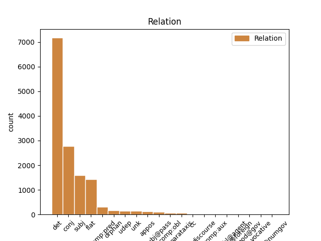
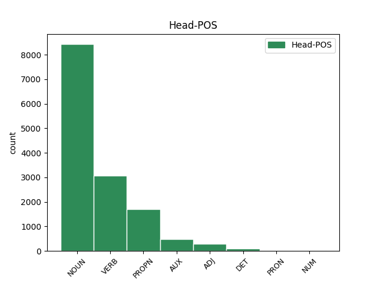
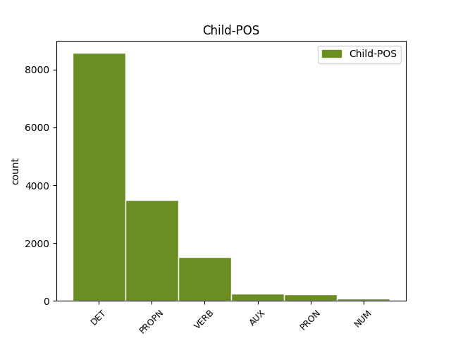

Distribution of features within this leaf



Agreement Rules sorted by frequency.
- When the dependent token is the determiner(det) of the head token, and the dependent token is DET.
1 Chemické _ _ _ _ 0 _ _ _
2 vlastnosti _ _ _ _ 0 _ _ _
3 prvků _ _ _ _ 0 _ _ _
4 se _ _ _ _ 0 _ _ _
5 v _ _ _ _ 0 _ _ _
6 každé každý DET AAFS6----1A---- Case=Loc|Degree=Pos|Gender=Fem|Number=Sing|Polarity=Pos|PronType=Tot 7 det _ _
7 periodě perioda NOUN NNFS6-----A---- Case=Loc|Gender=Fem|Number=Sing|Polarity=Pos 0 _ _ _
8 mění _ _ _ _ 0 _ _ _
9 obdobným _ _ _ _ 0 _ _ _
10 způsobem _ _ _ _ 0 _ _ _
11 mezi _ _ _ _ 0 _ _ _
12 prvním _ _ _ _ 0 _ _ _
13 a _ _ _ _ 0 _ _ _
14 posledním _ _ _ _ 0 _ _ _
15 prvkem _ _ _ _ 0 _ _ _
16 periody _ _ _ _ 0 _ _ _
17 . _ _ _ _ 0 _ _ _
1 V _ _ _ _ 0 _ _ _
2 # _ _ _ _ 0 _ _ _
3 sestavil _ _ _ _ 0 _ _ _
4 ruský _ _ _ _ 0 _ _ _
5 chemik chemik NOUN NNMS1-----A---- Animacy=Anim|Case=Nom|Gender=Masc|Number=Sing|Polarity=Pos 0 _ _ _
6 Mendělejev Mendělejev PROPN NNMS1-----A---- Animacy=Anim|Case=Nom|Gender=Masc|NameType=Sur|Number=Sing|Polarity=Pos 5 flat _ _
7 prvky _ _ _ _ 0 _ _ _
8 do _ _ _ _ 0 _ _ _
9 periodické _ _ _ _ 0 _ _ _
10 soustavy _ _ _ _ 0 _ _ _
11 , _ _ _ _ 0 _ _ _
12 která _ _ _ _ 0 _ _ _
13 je _ _ _ _ 0 _ _ _
14 připojena _ _ _ _ 0 _ _ _
15 . _ _ _ _ 0 _ _ _
1 Je _ _ _ _ 0 _ _ _
2 třeba _ _ _ _ 0 _ _ _
3 zdůraznit _ _ _ _ 0 _ _ _
4 , _ _ _ _ 0 _ _ _
5 že _ _ _ _ 0 _ _ _
6 Bumba _ _ _ _ 0 _ _ _
7 a _ _ _ _ 0 _ _ _
8 Suda _ _ _ _ 0 _ _ _
9 v _ _ _ _ 0 _ _ _
10 Ondřejově _ _ _ _ 0 _ _ _
11 během _ _ _ _ 0 _ _ _
12 celého _ _ _ _ 0 _ _ _
13 letního _ _ _ _ 0 _ _ _
14 období _ _ _ _ 0 _ _ _
15 prováděli provádět VERB VpMP---XR-AA--- Animacy=Anim|Aspect=Imp|Gender=Masc|Number=Plur|Polarity=Pos|Tense=Past|VerbForm=Part|Voice=Act 0 _ _ _
16 intenzívní _ _ _ _ 0 _ _ _
17 pozorování _ _ _ _ 0 _ _ _
18 slunečních _ _ _ _ 0 _ _ _
19 skvrn _ _ _ _ 0 _ _ _
20 s _ _ _ _ 0 _ _ _
21 velikým _ _ _ _ 0 _ _ _
22 rozlišením _ _ _ _ 0 _ _ _
23 a _ _ _ _ 0 _ _ _
24 shromáždili shromáždit VERB VpMP---XR-AA--- Animacy=Anim|Aspect=Imp|Gender=Masc|Number=Plur|Polarity=Pos|Tense=Past|VerbForm=Part|Voice=Act 15 conj _ _
25 značné _ _ _ _ 0 _ _ _
26 množství _ _ _ _ 0 _ _ _
27 velmi _ _ _ _ 0 _ _ _
28 kvalitního _ _ _ _ 0 _ _ _
29 materiálu _ _ _ _ 0 _ _ _
30 . _ _ _ _ 0 _ _ _
1 Již _ _ _ _ 0 _ _ _
2 předtím _ _ _ _ 0 _ _ _
3 studovala _ _ _ _ 0 _ _ _
4 rozptyl _ _ _ _ 0 _ _ _
5 částic _ _ _ _ 0 _ _ _
6 paní _ _ _ _ 0 _ _ _
7 Curieová Curieová PROPN NNFS1-----A---- Case=Nom|Gender=Fem|NameType=Sur|Number=Sing|Polarity=Pos 0 _ _ _
8 - _ _ _ _ 0 _ _ _
9 Sklodowská Sklodowská PROPN NNFS1-----A---- Case=Nom|Gender=Fem|NameType=Sur|Number=Sing|Polarity=Pos 7 conj _ SpaceAfter=No
10 v _ _ _ _ 0 _ _ _
11 Paříži _ _ _ _ 0 _ _ _
12 . _ _ _ _ 0 _ _ _
1 Moseley Moseley PROPN NNMS1-----A---- Animacy=Anim|Case=Nom|Gender=Masc|NameType=Sur|Number=Sing|Polarity=Pos 2 subj _ _
2 zjistil zjistit VERB VpYS---XR-AA--- Aspect=Perf|Gender=Masc|Number=Sing|Polarity=Pos|Tense=Past|VerbForm=Part|Voice=Act 0 _ _ _
3 , _ _ _ _ 0 _ _ _
4 že _ _ _ _ 0 _ _ _
5 série _ _ _ _ 0 _ _ _
6 * _ _ _ _ 0 _ _ _
7 a _ _ _ _ 0 _ _ _
8 * _ _ _ _ 0 _ _ _
9 se _ _ _ _ 0 _ _ _
10 u _ _ _ _ 0 _ _ _
11 různých _ _ _ _ 0 _ _ _
12 prvků _ _ _ _ 0 _ _ _
13 navzájem _ _ _ _ 0 _ _ _
14 podobají _ _ _ _ 0 _ _ _
15 a _ _ _ _ 0 _ _ _
16 s _ _ _ _ 0 _ _ _
17 rostoucím _ _ _ _ 0 _ _ _
18 atomovým _ _ _ _ 0 _ _ _
19 číslem _ _ _ _ 0 _ _ _
20 , _ _ _ _ 0 _ _ _
21 pořadovým _ _ _ _ 0 _ _ _
22 číslem _ _ _ _ 0 _ _ _
23 v _ _ _ _ 0 _ _ _
24 soustavě _ _ _ _ 0 _ _ _
25 prvků _ _ _ _ 0 _ _ _
26 , _ _ _ _ 0 _ _ _
27 se _ _ _ _ 0 _ _ _
28 posouvají _ _ _ _ 0 _ _ _
29 ke _ _ _ _ 0 _ _ _
30 kratším _ _ _ _ 0 _ _ _
31 vlnovým _ _ _ _ 0 _ _ _
32 délkám _ _ _ _ 0 _ _ _
33 neboli _ _ _ _ 0 _ _ _
34 k _ _ _ _ 0 _ _ _
35 větším _ _ _ _ 0 _ _ _
36 vlnočtům _ _ _ _ 0 _ _ _
37 . _ _ _ _ 0 _ _ _
1 Výklad _ _ _ _ 0 _ _ _
2 spekter _ _ _ _ 0 _ _ _
3 byl _ _ _ _ 0 _ _ _
4 vlastně _ _ _ _ 0 _ _ _
5 první _ _ _ _ 0 _ _ _
6 zkouškou _ _ _ _ 0 _ _ _
7 kvantově _ _ _ _ 0 _ _ _
8 modelu _ _ _ _ 0 _ _ _
9 , _ _ _ _ 0 _ _ _
10 který který DET P4YS1---------- Case=Nom|Gender=Masc|Number=Sing|PronType=Int,Rel 14 subj _ _
11 v _ _ _ _ 0 _ _ _
12 mikrosvětě _ _ _ _ 0 _ _ _
13 atomu _ _ _ _ 0 _ _ _
14 nahradil nahradit VERB VpYS---XR-AA--- Aspect=Perf|Gender=Masc|Number=Sing|Polarity=Pos|Tense=Past|VerbForm=Part|Voice=Act 0 _ _ _
15 klasickou _ _ _ _ 0 _ _ _
16 mechaniku _ _ _ _ 0 _ _ _
17 . _ _ _ _ 0 _ _ _
1 Vcelku _ _ _ _ 0 _ _ _
2 se _ _ _ _ 0 _ _ _
3 ukazuje _ _ _ _ 0 _ _ _
4 , _ _ _ _ 0 _ _ _
5 že _ _ _ _ 0 _ _ _
6 těžiště _ _ _ _ 0 _ _ _
7 prací _ _ _ _ 0 _ _ _
8 v _ _ _ _ 0 _ _ _
9 souvislosti _ _ _ _ 0 _ _ _
10 s _ _ _ _ 0 _ _ _
11 tyristorovou _ _ _ _ 0 _ _ _
12 regulací _ _ _ _ 0 _ _ _
13 lokomotiv _ _ _ _ 0 _ _ _
14 leží _ _ _ _ 0 _ _ _
15 v _ _ _ _ 0 _ _ _
16 nízkofrekvenčním _ _ _ _ 0 _ _ _
17 pásmu _ _ _ _ 0 _ _ _
18 , _ _ _ _ 0 _ _ _
19 kde _ _ _ _ 0 _ _ _
20 jsou _ _ _ _ 0 _ _ _
21 poměry _ _ _ _ 0 _ _ _
22 značně _ _ _ _ 0 _ _ _
23 komplikované _ _ _ _ 0 _ _ _
24 , _ _ _ _ 0 _ _ _
25 neboť _ _ _ _ 0 _ _ _
26 se _ _ _ _ 0 _ _ _
27 zde _ _ _ _ 0 _ _ _
28 kříží _ _ _ _ 0 _ _ _
29 hlediska _ _ _ _ 0 _ _ _
30 funkční _ _ _ _ 0 _ _ _
31 , _ _ _ _ 0 _ _ _
32 energetická _ _ _ _ 0 _ _ _
33 a _ _ _ _ 0 _ _ _
34 rušivého _ _ _ _ 0 _ _ _
35 působení _ _ _ _ 0 _ _ _
36 a _ _ _ _ 0 _ _ _
37 sám sám DET PLYS1---------- Case=Nom|Gender=Masc|Number=Sing|PronType=Emp 38 comp:pred _ LGloss=(samotný)
38 charakter charakter NOUN NNIS1-----A---- Animacy=Inan|Case=Nom|Gender=Masc|Number=Sing|Polarity=Pos 0 _ _ _
39 spektra _ _ _ _ 0 _ _ _
40 v _ _ _ _ 0 _ _ _
41 tomto _ _ _ _ 0 _ _ _
42 rozsahu _ _ _ _ 0 _ _ _
43 přechází _ _ _ _ 0 _ _ _
44 od _ _ _ _ 0 _ _ _
45 čistě _ _ _ _ 0 _ _ _
46 čárového _ _ _ _ 0 _ _ _
47 ke _ _ _ _ 0 _ _ _
48 spojitému _ _ _ _ 0 _ _ _
49 v _ _ _ _ 0 _ _ _
50 závislosti _ _ _ _ 0 _ _ _
51 na _ _ _ _ 0 _ _ _
52 stabilitě _ _ _ _ 0 _ _ _
53 provozních _ _ _ _ 0 _ _ _
54 podmínek _ _ _ _ 0 _ _ _
55 . _ _ _ _ 0 _ _ _
1 Před _ _ _ _ 0 _ _ _
2 vrtáním _ _ _ _ 0 _ _ _
3 se _ _ _ _ 0 _ _ _
4 má _ _ _ _ 0 _ _ _
5 ve _ _ _ _ 0 _ _ _
6 vrtaném _ _ _ _ 0 _ _ _
7 místě _ _ _ _ 0 _ _ _
8 udělat _ _ _ _ 0 _ _ _
9 důlek _ _ _ _ 0 _ _ _
10 , _ _ _ _ 0 _ _ _
11 aby _ _ _ _ 0 _ _ _
12 by _ _ _ _ 0 _ _ _
13 vrták _ _ _ _ 0 _ _ _
14 neklouzal klouzat VERB VpYS---XR-NA--- Aspect=Imp|Gender=Masc|Number=Sing|Polarity=Neg|Tense=Past|VerbForm=Part|Voice=Act 0 _ _ _
15 a _ _ _ _ 0 _ _ _
16 byl být AUX VpYS---XR-AA--- Gender=Masc|Number=Sing|Polarity=Pos|Tense=Past|VerbForm=Part|Voice=Act 14 conj _ _
17 přesně _ _ _ _ 0 _ _ _
18 usazen _ _ _ _ 0 _ _ _
19 . _ _ _ _ 0 _ _ _
1 V _ _ _ _ 0 _ _ _
2 Innsbrucku _ _ _ _ 0 _ _ _
3 to _ _ _ _ 0 _ _ _
4 byl _ _ _ _ 0 _ _ _
5 botanik _ _ _ _ 0 _ _ _
6 Kerner _ _ _ _ 0 _ _ _
7 , _ _ _ _ 0 _ _ _
8 který _ _ _ _ 0 _ _ _
9 byl _ _ _ _ 0 _ _ _
10 vlastně _ _ _ _ 0 _ _ _
11 první _ _ _ _ 0 _ _ _
12 , _ _ _ _ 0 _ _ _
13 kdo kdo PRON PKM-1---------- Animacy=Anim|Case=Nom|Gender=Masc|PronType=Int,Rel 15 subj _ _
14 se _ _ _ _ 0 _ _ _
15 pokoušel pokoušet VERB VpYS---XR-AA--- Aspect=Imp|Gender=Masc|Number=Sing|Polarity=Pos|Tense=Past|VerbForm=Part|Voice=Act 0 _ _ _
16 z _ _ _ _ 0 _ _ _
17 nedalekých _ _ _ _ 0 _ _ _
18 Dolomit _ _ _ _ 0 _ _ _
19 , _ _ _ _ 0 _ _ _
20 z _ _ _ _ 0 _ _ _
21 výšek _ _ _ _ 0 _ _ _
22 asi _ _ _ _ 0 _ _ _
23 # _ _ _ _ 0 _ _ _
24 metrů _ _ _ _ 0 _ _ _
25 , _ _ _ _ 0 _ _ _
26 snášet _ _ _ _ 0 _ _ _
27 rostliny _ _ _ _ 0 _ _ _
28 do _ _ _ _ 0 _ _ _
29 údolních _ _ _ _ 0 _ _ _
30 poloh _ _ _ _ 0 _ _ _
31 a _ _ _ _ 0 _ _ _
32 tam _ _ _ _ 0 _ _ _
33 je _ _ _ _ 0 _ _ _
34 pak _ _ _ _ 0 _ _ _
35 pěstovat _ _ _ _ 0 _ _ _
36 . _ _ _ _ 0 _ _ _
1 TOS _ _ _ _ 0 _ _ _
2 Rakovník _ _ _ _ 0 _ _ _
3 pro _ _ _ _ 0 _ _ _
4 stroje stroj NOUN NNIP4-----A---- Animacy=Inan|Case=Acc|Gender=Masc|Number=Plur|Polarity=Pos 0 _ _ _
5 a _ _ _ _ 0 _ _ _
6 zařízení _ _ _ _ 0 _ _ _
7 pro _ _ _ _ 0 _ _ _
8 zpracování _ _ _ _ 0 _ _ _
9 plastů _ _ _ _ 0 _ _ _
10 , _ _ _ _ 0 _ _ _
11 Vunar Vunar PROPN NNIS1-----A---- Animacy=Inan|Case=Nom|Gender=Masc|NameType=Com|Number=Sing|Polarity=Pos 4 orphan _ _
12 Nové _ _ _ _ 0 _ _ _
13 Zámky _ _ _ _ 0 _ _ _
14 pro _ _ _ _ 0 _ _ _
15 nástroje _ _ _ _ 0 _ _ _
16 pro _ _ _ _ 0 _ _ _
17 zpracování _ _ _ _ 0 _ _ _
18 plastů _ _ _ _ 0 _ _ _
19 . _ _ _ _ 0 _ _ _
1 Druhý _ _ _ _ 0 _ _ _
2 pozorovací _ _ _ _ 0 _ _ _
3 večer _ _ _ _ 0 _ _ _
4 se _ _ _ _ 0 _ _ _
5 koná _ _ _ _ 0 _ _ _
6 v _ _ _ _ 0 _ _ _
7 lednu _ _ _ _ 0 _ _ _
8 až _ _ _ _ 0 _ _ _
9 únoru _ _ _ _ 0 _ _ _
10 a _ _ _ _ 0 _ _ _
11 plní _ _ _ _ 0 _ _ _
12 se _ _ _ _ 0 _ _ _
13 při _ _ _ _ 0 _ _ _
14 něm _ _ _ _ 0 _ _ _
15 # _ _ _ _ 0 _ _ _
16 zbývajících _ _ _ _ 0 _ _ _
17 úkolů _ _ _ _ 0 _ _ _
18 , _ _ _ _ 0 _ _ _
19 pozorování _ _ _ _ 0 _ _ _
20 povrchu _ _ _ _ 0 _ _ _
21 planety _ _ _ _ 0 _ _ _
22 , _ _ _ _ 0 _ _ _
23 pozorování _ _ _ _ 0 _ _ _
24 dvojhvězdy _ _ _ _ 0 _ _ _
25 , _ _ _ _ 0 _ _ _
26 pozorování _ _ _ _ 0 _ _ _
27 otevřené _ _ _ _ 0 _ _ _
28 hvězdokupy hvězdokupa NOUN NNFS2-----A---- Case=Gen|Gender=Fem|Number=Sing|Polarity=Pos 0 _ _ _
29 , _ _ _ _ 0 _ _ _
30 Plejády Plejády PROPN NNFP1-----A---- Case=Nom|Gender=Fem|NameType=Geo|Number=Plur|Polarity=Pos 28 unk _ SpaceAfter=No
31 , _ _ _ _ 0 _ _ _
32 vše _ _ _ _ 0 _ _ _
33 s _ _ _ _ 0 _ _ _
34 pomocí _ _ _ _ 0 _ _ _
35 dalekohledu _ _ _ _ 0 _ _ _
36 , _ _ _ _ 0 _ _ _
37 zimní _ _ _ _ 0 _ _ _
38 souhvězdí _ _ _ _ 0 _ _ _
39 , _ _ _ _ 0 _ _ _
40 měření _ _ _ _ 0 _ _ _
41 úhlových _ _ _ _ 0 _ _ _
42 vzdáleností _ _ _ _ 0 _ _ _
43 na _ _ _ _ 0 _ _ _
44 obloze _ _ _ _ 0 _ _ _
45 , _ _ _ _ 0 _ _ _
46 odhad _ _ _ _ 0 _ _ _
47 jasnosti _ _ _ _ 0 _ _ _
48 a _ _ _ _ 0 _ _ _
49 barvy _ _ _ _ 0 _ _ _
50 hlavních _ _ _ _ 0 _ _ _
51 hvězd _ _ _ _ 0 _ _ _
52 , _ _ _ _ 0 _ _ _
53 souhvězdí _ _ _ _ 0 _ _ _
54 Orion _ _ _ _ 0 _ _ _
55 . _ _ _ _ 0 _ _ _
1 Jako _ _ _ _ 0 _ _ _
2 klasické _ _ _ _ 0 _ _ _
3 případy _ _ _ _ 0 _ _ _
4 uplatnění _ _ _ _ 0 _ _ _
5 tohoto _ _ _ _ 0 _ _ _
6 pojmu _ _ _ _ 0 _ _ _
7 bývají _ _ _ _ 0 _ _ _
8 uváděny _ _ _ _ 0 _ _ _
9 dvě _ _ _ _ 0 _ _ _
10 události _ _ _ _ 0 _ _ _
11 , _ _ _ _ 0 _ _ _
12 hlasování _ _ _ _ 0 _ _ _
13 amerického _ _ _ _ 0 _ _ _
14 senátu _ _ _ _ 0 _ _ _
15 z _ _ _ _ 0 _ _ _
16 # _ _ _ _ 0 _ _ _
17 prosince _ _ _ _ 0 _ _ _
18 # _ _ _ _ 0 _ _ _
19 , _ _ _ _ 0 _ _ _
20 který _ _ _ _ 0 _ _ _
21 se _ _ _ _ 0 _ _ _
22 vyslovil _ _ _ _ 0 _ _ _
23 pro _ _ _ _ 0 _ _ _
24 zastavení _ _ _ _ 0 _ _ _
25 projektu _ _ _ _ 0 _ _ _
26 SST _ _ _ _ 0 _ _ _
27 , _ _ _ _ 0 _ _ _
28 nadzvukové _ _ _ _ 0 _ _ _
29 dopravní _ _ _ _ 0 _ _ _
30 prostředky _ _ _ _ 0 _ _ _
31 , _ _ _ _ 0 _ _ _
32 a _ _ _ _ 0 _ _ _
33 rozhodnutí _ _ _ _ 0 _ _ _
34 britské _ _ _ _ 0 _ _ _
35 vlády _ _ _ _ 0 _ _ _
36 z _ _ _ _ 0 _ _ _
37 # _ _ _ _ 0 _ _ _
38 dubna _ _ _ _ 0 _ _ _
39 # _ _ _ _ 0 _ _ _
40 o _ _ _ _ 0 _ _ _
41 perspektivách _ _ _ _ 0 _ _ _
42 londýnského _ _ _ _ 0 _ _ _
43 letiště _ _ _ _ 0 _ _ _
44 , _ _ _ _ 0 _ _ _
45 které který DET P4NS1---------- Case=Nom|Gender=Neut|Number=Sing|PronType=Int,Rel 46 subj@pass _ _
46 bylo být AUX VpNS---XR-AA--- Gender=Neut|Number=Sing|Polarity=Pos|Tense=Past|VerbForm=Part|Voice=Act 0 _ _ _
47 charakterizováno _ _ _ _ 0 _ _ _
48 jako _ _ _ _ 0 _ _ _
49 vítězství _ _ _ _ 0 _ _ _
50 stoupenců _ _ _ _ 0 _ _ _
51 prostředí _ _ _ _ 0 _ _ _
52 nad _ _ _ _ 0 _ _ _
53 stoupenci _ _ _ _ 0 _ _ _
54 ekonomických _ _ _ _ 0 _ _ _
55 hledisek _ _ _ _ 0 _ _ _
56 . _ _ _ _ 0 _ _ _
1 Zvláštností _ _ _ _ 0 _ _ _
2 rozvoje _ _ _ _ 0 _ _ _
3 vědy _ _ _ _ 0 _ _ _
4 a _ _ _ _ 0 _ _ _
5 techniky _ _ _ _ 0 _ _ _
6 naší _ _ _ _ 0 _ _ _
7 doby _ _ _ _ 0 _ _ _
8 je _ _ _ _ 0 _ _ _
9 , _ _ _ _ 0 _ _ _
10 že _ _ _ _ 0 _ _ _
11 revoluční _ _ _ _ 0 _ _ _
12 převraty _ _ _ _ 0 _ _ _
13 ve _ _ _ _ 0 _ _ _
14 vědě _ _ _ _ 0 _ _ _
15 a _ _ _ _ 0 _ _ _
16 technice _ _ _ _ 0 _ _ _
17 vystupují _ _ _ _ 0 _ _ _
18 jako _ _ _ _ 0 _ _ _
19 různé _ _ _ _ 0 _ _ _
20 stránky _ _ _ _ 0 _ _ _
21 jednoho jeden NUM ClZS2---------- Case=Gen|Gender=Masc,Neut|Number=Sing|NumForm=Word|NumType=Card|NumValue=1,2,3 0 _ _ _
22 a _ _ _ _ 0 _ _ _
23 téhož týž DET PDZS2---------- Case=Gen|Gender=Masc,Neut|Number=Sing|PronType=Dem 21 conj _ _
24 procesu _ _ _ _ 0 _ _ _
25 vědeckotechnické _ _ _ _ 0 _ _ _
26 revoluce _ _ _ _ 0 _ _ _
27 . _ _ _ _ 0 _ _ _
1 V _ _ _ _ 0 _ _ _
2 ideálním _ _ _ _ 0 _ _ _
3 případě _ _ _ _ 0 _ _ _
4 , _ _ _ _ 0 _ _ _
5 v _ _ _ _ 0 _ _ _
6 neproudícím _ _ _ _ 0 _ _ _
7 zcela _ _ _ _ 0 _ _ _
8 homogenním _ _ _ _ 0 _ _ _
9 prostředí _ _ _ _ 0 _ _ _
10 vyrostl _ _ _ _ 0 _ _ _
11 krystal _ _ _ _ 0 _ _ _
12 omezený _ _ _ _ 0 _ _ _
13 shodnými _ _ _ _ 0 _ _ _
14 plochami _ _ _ _ 0 _ _ _
15 , _ _ _ _ 0 _ _ _
16 které který DET P4FP1---------- Case=Nom|Gender=Fem|Number=Plur|PronType=Int,Rel 0 _ _ _
17 mají _ _ _ _ 0 _ _ _
18 všechny všechno PRON PLFP1---------- Case=Nom|Gender=Fem|Number=Plur|PronType=Tot 16 comp:pred _ _
19 stejnou _ _ _ _ 0 _ _ _
20 růstovou _ _ _ _ 0 _ _ _
21 rychlost _ _ _ _ 0 _ _ _
22 . _ _ _ _ 0 _ _ _
1 Čestnými _ _ _ _ 0 _ _ _
2 členy _ _ _ _ 0 _ _ _
3 byli _ _ _ _ 0 _ _ _
4 přední _ _ _ _ 0 _ _ _
5 učenci učenec NOUN NNMP1-----A---- Animacy=Anim|Case=Nom|Gender=Masc|Number=Plur|Polarity=Pos 0 _ _ _
6 té _ _ _ _ 0 _ _ _
7 doby _ _ _ _ 0 _ _ _
8 , _ _ _ _ 0 _ _ _
9 Réaumur Réaumur PROPN NNMS1-----A---- Animacy=Anim|Case=Nom|Gender=Masc|NameType=Sur|Number=Sing|Polarity=Pos 5 appos _ SpaceAfter=No
10 , _ _ _ _ 0 _ _ _
11 Voltaire _ _ _ _ 0 _ _ _
12 , _ _ _ _ 0 _ _ _
13 Linné _ _ _ _ 0 _ _ _
14 a _ _ _ _ 0 _ _ _
15 jiní _ _ _ _ 0 _ _ _
16 . _ _ _ _ 0 _ _ _
1 Nástin _ _ _ _ 0 _ _ _
2 záměrných _ _ _ _ 0 _ _ _
3 tendencí _ _ _ _ 0 _ _ _
4 Erbenova _ _ _ _ 0 _ _ _
5 stylistického _ _ _ _ 0 _ _ _
6 postupu _ _ _ _ 0 _ _ _
7 při _ _ _ _ 0 _ _ _
8 zpracování _ _ _ _ 0 _ _ _
9 lidové _ _ _ _ 0 _ _ _
10 pohádky _ _ _ _ 0 _ _ _
11 bych _ _ _ _ 0 _ _ _
12 ráda _ _ _ _ 0 _ _ _
13 uzavřela _ _ _ _ 0 _ _ _
14 několika _ _ _ _ 0 _ _ _
15 poznámkami _ _ _ _ 0 _ _ _
16 k _ _ _ _ 0 _ _ _
17 ústředním _ _ _ _ 0 _ _ _
18 textům _ _ _ _ 0 _ _ _
19 Erbenovy _ _ _ _ 0 _ _ _
20 tvorby _ _ _ _ 0 _ _ _
21 v _ _ _ _ 0 _ _ _
22 oboru _ _ _ _ 0 _ _ _
23 pohádek _ _ _ _ 0 _ _ _
24 , _ _ _ _ 0 _ _ _
25 k _ _ _ _ 0 _ _ _
26 českým _ _ _ _ 0 _ _ _
27 textům _ _ _ _ 0 _ _ _
28 v _ _ _ _ 0 _ _ _
29 oboru _ _ _ _ 0 _ _ _
30 kouzelné _ _ _ _ 0 _ _ _
31 pohádky _ _ _ _ 0 _ _ _
32 , _ _ _ _ 0 _ _ _
33 v _ _ _ _ 0 _ _ _
34 nichž _ _ _ _ 0 _ _ _
35 dosáhl dosáhnout VERB VpYS---XR-AA--- Gender=Masc|Number=Sing|Polarity=Pos|Tense=Past|VerbForm=Part|Voice=Act 0 _ _ _
36 , _ _ _ _ 0 _ _ _
37 jak _ _ _ _ 0 _ _ _
38 se _ _ _ _ 0 _ _ _
39 na _ _ _ _ 0 _ _ _
40 tom _ _ _ _ 0 _ _ _
41 oprávněně _ _ _ _ 0 _ _ _
42 shodli shodnout VERB VpMP---XR-AA--1 Animacy=Anim|Aspect=Perf|Gender=Masc|Number=Plur|Polarity=Pos|Tense=Past|VerbForm=Part|Voice=Act 35 parataxis _ _
43 všichni _ _ _ _ 0 _ _ _
44 starší _ _ _ _ 0 _ _ _
45 autoři _ _ _ _ 0 _ _ _
46 posuzující _ _ _ _ 0 _ _ _
47 jeho _ _ _ _ 0 _ _ _
48 dílo _ _ _ _ 0 _ _ _
49 , _ _ _ _ 0 _ _ _
50 skutečného _ _ _ _ 0 _ _ _
51 mistrovství _ _ _ _ 0 _ _ _
52 , _ _ _ _ 0 _ _ _
53 tedy _ _ _ _ 0 _ _ _
54 k _ _ _ _ 0 _ _ _
55 textům _ _ _ _ 0 _ _ _
56 Dlouhý _ _ _ _ 0 _ _ _
57 , _ _ _ _ 0 _ _ _
58 Široký _ _ _ _ 0 _ _ _
59 a _ _ _ _ 0 _ _ _
60 Bystrozraký _ _ _ _ 0 _ _ _
61 , _ _ _ _ 0 _ _ _
62 Zlatovláska _ _ _ _ 0 _ _ _
63 a _ _ _ _ 0 _ _ _
64 Tři _ _ _ _ 0 _ _ _
65 zlaté _ _ _ _ 0 _ _ _
66 vlasy _ _ _ _ 0 _ _ _
67 děda _ _ _ _ 0 _ _ _
68 Vševěda _ _ _ _ 0 _ _ _
69 . _ _ _ _ 0 _ _ _
1 Osobní _ _ _ _ 0 _ _ _
2 zaujetí zaujetí NOUN NNNS1-----A---- Case=Nom|Gender=Neut|Number=Sing|Polarity=Pos 0 _ _ _
3 pro _ _ _ _ 0 _ _ _
4 literaturu _ _ _ _ 0 _ _ _
5 , _ _ _ _ 0 _ _ _
6 horoucí _ _ _ _ 0 _ _ _
7 láska _ _ _ _ 0 _ _ _
8 k _ _ _ _ 0 _ _ _
9 ní _ _ _ _ 0 _ _ _
10 , _ _ _ _ 0 _ _ _
11 touha _ _ _ _ 0 _ _ _
12 znásobit _ _ _ _ 0 _ _ _
13 její _ _ _ _ 0 _ _ _
14 sílu _ _ _ _ 0 _ _ _
15 , _ _ _ _ 0 _ _ _
16 rozevřít _ _ _ _ 0 _ _ _
17 ji _ _ _ _ 0 _ _ _
18 před _ _ _ _ 0 _ _ _
19 čtenářem _ _ _ _ 0 _ _ _
20 , _ _ _ _ 0 _ _ _
21 pomoci _ _ _ _ 0 _ _ _
22 mu _ _ _ _ 0 _ _ _
23 orientovat _ _ _ _ 0 _ _ _
24 se _ _ _ _ 0 _ _ _
25 v _ _ _ _ 0 _ _ _
26 ní _ _ _ _ 0 _ _ _
27 , _ _ _ _ 0 _ _ _
28 osvojit _ _ _ _ 0 _ _ _
29 si _ _ _ _ 0 _ _ _
30 všechno _ _ _ _ 0 _ _ _
31 její _ _ _ _ 0 _ _ _
32 bohatství _ _ _ _ 0 _ _ _
33 , _ _ _ _ 0 _ _ _
34 její _ _ _ _ 0 _ _ _
35 poznání _ _ _ _ 0 _ _ _
36 i _ _ _ _ 0 _ _ _
37 krásu _ _ _ _ 0 _ _ _
38 , _ _ _ _ 0 _ _ _
39 to ten DET PDNS1---------- Case=Nom|Gender=Neut|Number=Sing|PronType=Dem 2 appos _ _
40 jsou _ _ _ _ 0 _ _ _
41 rysy _ _ _ _ 0 _ _ _
42 Fučíkova _ _ _ _ 0 _ _ _
43 přístupu _ _ _ _ 0 _ _ _
44 k _ _ _ _ 0 _ _ _
45 literatuře _ _ _ _ 0 _ _ _
46 , _ _ _ _ 0 _ _ _
47 předpoklady _ _ _ _ 0 _ _ _
48 , _ _ _ _ 0 _ _ _
49 z _ _ _ _ 0 _ _ _
50 nichž _ _ _ _ 0 _ _ _
51 vycházel _ _ _ _ 0 _ _ _
52 při _ _ _ _ 0 _ _ _
53 své _ _ _ _ 0 _ _ _
54 kritické _ _ _ _ 0 _ _ _
55 a _ _ _ _ 0 _ _ _
56 historické _ _ _ _ 0 _ _ _
57 tvorbě _ _ _ _ 0 _ _ _
58 . _ _ _ _ 0 _ _ _
1 Tuto _ _ _ _ 0 _ _ _
2 funkci _ _ _ _ 0 _ _ _
3 , _ _ _ _ 0 _ _ _
4 zprostředkovat _ _ _ _ 0 _ _ _
5 poznání _ _ _ _ 0 _ _ _
6 jevů _ _ _ _ 0 _ _ _
7 , _ _ _ _ 0 _ _ _
8 které _ _ _ _ 0 _ _ _
9 leží _ _ _ _ 0 _ _ _
10 mimo _ _ _ _ 0 _ _ _
11 jazyk _ _ _ _ 0 _ _ _
12 , _ _ _ _ 0 _ _ _
13 plnila _ _ _ _ 0 _ _ _
14 jazykověda _ _ _ _ 0 _ _ _
15 téměř _ _ _ _ 0 _ _ _
16 výhradně _ _ _ _ 0 _ _ _
17 ještě _ _ _ _ 0 _ _ _
18 dlouho _ _ _ _ 0 _ _ _
19 do _ _ _ _ 0 _ _ _
20 moderní _ _ _ _ 0 _ _ _
21 doby _ _ _ _ 0 _ _ _
22 , _ _ _ _ 0 _ _ _
23 ponechávajíc _ _ _ _ 0 _ _ _
24 přitom _ _ _ _ 0 _ _ _
25 stranou _ _ _ _ 0 _ _ _
26 vnitřní _ _ _ _ 0 _ _ _
27 strukturu _ _ _ _ 0 _ _ _
28 nejvlastnějšího _ _ _ _ 0 _ _ _
29 předmětu _ _ _ _ 0 _ _ _
30 svého _ _ _ _ 0 _ _ _
31 zájmu _ _ _ _ 0 _ _ _
32 , _ _ _ _ 0 _ _ _
33 jímž _ _ _ _ 0 _ _ _
34 je _ _ _ _ 0 _ _ _
35 , _ _ _ _ 0 _ _ _
36 jak _ _ _ _ 0 _ _ _
37 to _ _ _ _ 0 _ _ _
38 poněkud _ _ _ _ 0 _ _ _
39 vyhroceně _ _ _ _ 0 _ _ _
40 formuloval formulovat VERB VpYS---XR-AA--- Gender=Masc|Number=Sing|Polarity=Pos|Tense=Past|VerbForm=Part|Voice=Act 0 _ _ _
41 na _ _ _ _ 0 _ _ _
42 počátku _ _ _ _ 0 _ _ _
43 # _ _ _ _ 0 _ _ _
44 * _ _ _ _ 0 _ _ _
45 jeden jeden NUM ClYS1---------- Case=Nom|Gender=Masc|Number=Sing|NumForm=Word|NumType=Card|NumValue=1,2,3 40 subj _ LNumValue=1
46 z _ _ _ _ 0 _ _ _
47 klasiků _ _ _ _ 0 _ _ _
48 jazykového _ _ _ _ 0 _ _ _
49 imanentismu _ _ _ _ 0 _ _ _
50 , _ _ _ _ 0 _ _ _
51 ženevský _ _ _ _ 0 _ _ _
52 lingvista _ _ _ _ 0 _ _ _
53 * _ _ _ _ 0 _ _ _
54 de _ _ _ _ 0 _ _ _
55 Saussure _ _ _ _ 0 _ _ _
56 , _ _ _ _ 0 _ _ _
57 jazyk _ _ _ _ 0 _ _ _
58 chápaný _ _ _ _ 0 _ _ _
59 sám _ _ _ _ 0 _ _ _
60 v _ _ _ _ 0 _ _ _
61 sobě _ _ _ _ 0 _ _ _
62 a _ _ _ _ 0 _ _ _
63 sám _ _ _ _ 0 _ _ _
64 pro _ _ _ _ 0 _ _ _
65 sebe _ _ _ _ 0 _ _ _
66 . _ _ _ _ 0 _ _ _
1 Garrod _ _ _ _ 0 _ _ _
2 označil _ _ _ _ 0 _ _ _
3 za _ _ _ _ 0 _ _ _
4 holorhinní _ _ _ _ 0 _ _ _
5 ty _ _ _ _ 0 _ _ _
6 ptáky _ _ _ _ 0 _ _ _
7 , _ _ _ _ 0 _ _ _
8 u _ _ _ _ 0 _ _ _
9 kterých _ _ _ _ 0 _ _ _
10 kosti _ _ _ _ 0 _ _ _
11 nosní _ _ _ _ 0 _ _ _
12 , _ _ _ _ 0 _ _ _
13 nasalia _ _ _ _ 0 _ _ _
14 , _ _ _ _ 0 _ _ _
15 tvoří _ _ _ _ 0 _ _ _
16 na _ _ _ _ 0 _ _ _
17 zadním _ _ _ _ 0 _ _ _
18 konci _ _ _ _ 0 _ _ _
19 zaokrouhlený _ _ _ _ 0 _ _ _
20 okraj _ _ _ _ 0 _ _ _
21 nozder _ _ _ _ 0 _ _ _
22 , _ _ _ _ 0 _ _ _
23 potápky _ _ _ _ 0 _ _ _
24 , _ _ _ _ 0 _ _ _
25 vrubozobí _ _ _ _ 0 _ _ _
26 a _ _ _ _ 0 _ _ _
27 četné _ _ _ _ 0 _ _ _
28 jiné _ _ _ _ 0 _ _ _
29 řády _ _ _ _ 0 _ _ _
30 a _ _ _ _ 0 _ _ _
31 za _ _ _ _ 0 _ _ _
32 schizorhinní _ _ _ _ 0 _ _ _
33 považoval považovat VERB VpYS---XR-AA--- Aspect=Imp|Gender=Masc|Number=Sing|Polarity=Pos|Tense=Past|VerbForm=Part|Voice=Act 0 _ _ _
34 takové takový DET PDMP4---------- Animacy=Anim|Case=Acc|Gender=Masc|Number=Plur|PronType=Dem 33 unk _ SpaceAfter=No
35 , _ _ _ _ 0 _ _ _
36 u _ _ _ _ 0 _ _ _
37 nichž _ _ _ _ 0 _ _ _
38 zadní _ _ _ _ 0 _ _ _
39 okraj _ _ _ _ 0 _ _ _
40 nozder _ _ _ _ 0 _ _ _
41 tvoří _ _ _ _ 0 _ _ _
42 úzkou _ _ _ _ 0 _ _ _
43 štěrbinu _ _ _ _ 0 _ _ _
44 , _ _ _ _ 0 _ _ _
45 brodiví _ _ _ _ 0 _ _ _
46 a _ _ _ _ 0 _ _ _
47 jeřábi _ _ _ _ 0 _ _ _
48 . _ _ _ _ 0 _ _ _
1 Kromě _ _ _ _ 0 _ _ _
2 sympatií _ _ _ _ 0 _ _ _
3 rodičů _ _ _ _ 0 _ _ _
4 rozhodují _ _ _ _ 0 _ _ _
5 samozřejmě _ _ _ _ 0 _ _ _
6 i _ _ _ _ 0 _ _ _
7 mocenské _ _ _ _ 0 _ _ _
8 zájmy _ _ _ _ 0 _ _ _
9 , _ _ _ _ 0 _ _ _
10 protože _ _ _ _ 0 _ _ _
11 ve _ _ _ _ 0 _ _ _
12 hře _ _ _ _ 0 _ _ _
13 jsou _ _ _ _ 0 _ _ _
14 rozsáhlá _ _ _ _ 0 _ _ _
15 území _ _ _ _ 0 _ _ _
16 , _ _ _ _ 0 _ _ _
17 jako _ _ _ _ 0 _ _ _
18 například _ _ _ _ 0 _ _ _
19 Akvitánie _ _ _ _ 0 _ _ _
20 , _ _ _ _ 0 _ _ _
21 dědické _ _ _ _ 0 _ _ _
22 léno _ _ _ _ 0 _ _ _
23 královny _ _ _ _ 0 _ _ _
24 Eleanory _ _ _ _ 0 _ _ _
25 , _ _ _ _ 0 _ _ _
26 které _ _ _ _ 0 _ _ _
27 Jindřich _ _ _ _ 0 _ _ _
28 daroval darovat VERB VpYS---XR-AA--- Aspect=Imp|Gender=Masc|Number=Sing|Polarity=Pos|Tense=Past|VerbForm=Part|Voice=Act 0 _ _ _
29 Richardovi Richard PROPN NNMS3-----A---- Animacy=Anim|Case=Dat|Gender=Masc|NameType=Giv|Number=Sing|Polarity=Pos 28 comp:obl _ SpaceAfter=No
30 , _ _ _ _ 0 _ _ _
31 a _ _ _ _ 0 _ _ _
32 zájmy _ _ _ _ 0 _ _ _
33 ryze _ _ _ _ 0 _ _ _
34 osobní _ _ _ _ 0 _ _ _
35 jako _ _ _ _ 0 _ _ _
36 králův _ _ _ _ 0 _ _ _
37 vztah _ _ _ _ 0 _ _ _
38 k _ _ _ _ 0 _ _ _
39 princezně _ _ _ _ 0 _ _ _
40 Alici _ _ _ _ 0 _ _ _
41 , _ _ _ _ 0 _ _ _
42 královnina _ _ _ _ 0 _ _ _
43 touha _ _ _ _ 0 _ _ _
44 po _ _ _ _ 0 _ _ _
45 svobodě _ _ _ _ 0 _ _ _
46 , _ _ _ _ 0 _ _ _
47 ctižádost _ _ _ _ 0 _ _ _
48 všech _ _ _ _ 0 _ _ _
49 tří _ _ _ _ 0 _ _ _
50 synů _ _ _ _ 0 _ _ _
51 . _ _ _ _ 0 _ _ _
1 V _ _ _ _ 0 _ _ _
2 těchto _ _ _ _ 0 _ _ _
3 chrámech _ _ _ _ 0 _ _ _
4 byl _ _ _ _ 0 _ _ _
5 zřejmě _ _ _ _ 0 _ _ _
6 uchováván _ _ _ _ 0 _ _ _
7 posvátný _ _ _ _ 0 _ _ _
8 oheň oheň NOUN NNIS1-----A---- Animacy=Inan|Case=Nom|Gender=Masc|Number=Sing|Polarity=Pos 0 _ _ _
9 , _ _ _ _ 0 _ _ _
10 jeden jeden NUM ClYS1---------- Case=Nom|Gender=Masc|Number=Sing|NumForm=Word|NumType=Card|NumValue=1,2,3 8 appos _ LNumValue=1
11 ze _ _ _ _ 0 _ _ _
12 čtyř _ _ _ _ 0 _ _ _
13 uctívaných _ _ _ _ 0 _ _ _
14 živlů _ _ _ _ 0 _ _ _
15 , _ _ _ _ 0 _ _ _
16 kterými _ _ _ _ 0 _ _ _
17 jsou _ _ _ _ 0 _ _ _
18 dále _ _ _ _ 0 _ _ _
19 vzduch _ _ _ _ 0 _ _ _
20 , _ _ _ _ 0 _ _ _
21 voda _ _ _ _ 0 _ _ _
22 , _ _ _ _ 0 _ _ _
23 země _ _ _ _ 0 _ _ _
24 . _ _ _ _ 0 _ _ _
1 Po _ _ _ _ 0 _ _ _
2 založení _ _ _ _ 0 _ _ _
3 Československé _ _ _ _ 0 _ _ _
4 akademie _ _ _ _ 0 _ _ _
5 věd _ _ _ _ 0 _ _ _
6 v _ _ _ _ 0 _ _ _
7 byl být AUX VpYS---XR-AA--- Gender=Masc|Number=Sing|Polarity=Pos|Tense=Past|VerbForm=Part|Voice=Act 0 _ _ _
8 ÚÚF ÚÚF PROPN NNIXX-----A---8 Abbr=Yes|Animacy=Inan|Gender=Masc|NameType=Com|Polarity=Pos 7 subj@pass _ _
9 spolu _ _ _ _ 0 _ _ _
10 s _ _ _ _ 0 _ _ _
11 ostatními _ _ _ _ 0 _ _ _
12 ústředními _ _ _ _ 0 _ _ _
13 ústavy _ _ _ _ 0 _ _ _
14 převeden _ _ _ _ 0 _ _ _
15 do _ _ _ _ 0 _ _ _
16 ČSAV _ _ _ _ 0 _ _ _
17 , _ _ _ _ 0 _ _ _
18 v _ _ _ _ 0 _ _ _
19 níž _ _ _ _ 0 _ _ _
20 pak _ _ _ _ 0 _ _ _
21 bylo _ _ _ _ 0 _ _ _
22 postupně _ _ _ _ 0 _ _ _
23 vybudováno _ _ _ _ 0 _ _ _
24 šest _ _ _ _ 0 _ _ _
25 fyzikálních _ _ _ _ 0 _ _ _
26 pracovišť _ _ _ _ 0 _ _ _
27 ČSAV _ _ _ _ 0 _ _ _
28 , _ _ _ _ 0 _ _ _
29 Ústav _ _ _ _ 0 _ _ _
30 fyziky _ _ _ _ 0 _ _ _
31 pevných _ _ _ _ 0 _ _ _
32 látek _ _ _ _ 0 _ _ _
33 ČSAV _ _ _ _ 0 _ _ _
34 , _ _ _ _ 0 _ _ _
35 Fyzikální _ _ _ _ 0 _ _ _
36 ústav _ _ _ _ 0 _ _ _
37 ČSAV _ _ _ _ 0 _ _ _
38 , _ _ _ _ 0 _ _ _
39 Ústav _ _ _ _ 0 _ _ _
40 fyziky _ _ _ _ 0 _ _ _
41 plazmatu _ _ _ _ 0 _ _ _
42 ČSAV _ _ _ _ 0 _ _ _
43 , _ _ _ _ 0 _ _ _
44 Ústav _ _ _ _ 0 _ _ _
45 jaderné _ _ _ _ 0 _ _ _
46 fyziky _ _ _ _ 0 _ _ _
47 ČSAV _ _ _ _ 0 _ _ _
48 , _ _ _ _ 0 _ _ _
49 Ústav _ _ _ _ 0 _ _ _
50 přístrojové _ _ _ _ 0 _ _ _
51 techniky _ _ _ _ 0 _ _ _
52 ČSAV _ _ _ _ 0 _ _ _
53 , _ _ _ _ 0 _ _ _
54 Laboratoř _ _ _ _ 0 _ _ _
55 radiologické _ _ _ _ 0 _ _ _
56 dozimetrie _ _ _ _ 0 _ _ _
57 ČSAV _ _ _ _ 0 _ _ _
58 , _ _ _ _ 0 _ _ _
59 a _ _ _ _ 0 _ _ _
60 dvě _ _ _ _ 0 _ _ _
61 fyzikální _ _ _ _ 0 _ _ _
62 pracoviště _ _ _ _ 0 _ _ _
63 ve _ _ _ _ 0 _ _ _
64 Slovenské _ _ _ _ 0 _ _ _
65 akademii _ _ _ _ 0 _ _ _
66 věd _ _ _ _ 0 _ _ _
67 , _ _ _ _ 0 _ _ _
68 Fyzikální _ _ _ _ 0 _ _ _
69 ústav _ _ _ _ 0 _ _ _
70 SAV _ _ _ _ 0 _ _ _
71 v _ _ _ _ 0 _ _ _
72 Bratislavě _ _ _ _ 0 _ _ _
73 a _ _ _ _ 0 _ _ _
74 Ústav _ _ _ _ 0 _ _ _
75 experimentálnej _ _ _ _ 0 _ _ _
76 fyziky _ _ _ _ 0 _ _ _
77 SAV _ _ _ _ 0 _ _ _
78 v _ _ _ _ 0 _ _ _
79 Košicích _ _ _ _ 0 _ _ _
80 s _ _ _ _ 0 _ _ _
81 celkovým _ _ _ _ 0 _ _ _
82 počtem _ _ _ _ 0 _ _ _
83 # _ _ _ _ 0 _ _ _
84 pracovníků _ _ _ _ 0 _ _ _
85 zabývající _ _ _ _ 0 _ _ _
86 se _ _ _ _ 0 _ _ _
87 fyzikálním _ _ _ _ 0 _ _ _
88 bádáním _ _ _ _ 0 _ _ _
89 . _ _ _ _ 0 _ _ _
1 Drobný _ _ _ _ 0 _ _ _
2 spotřebitel _ _ _ _ 0 _ _ _
3 kupuje _ _ _ _ 0 _ _ _
4 prkna _ _ _ _ 0 _ _ _
5 , _ _ _ _ 0 _ _ _
6 fošny _ _ _ _ 0 _ _ _
7 , _ _ _ _ 0 _ _ _
8 hranoly _ _ _ _ 0 _ _ _
9 , _ _ _ _ 0 _ _ _
10 latě _ _ _ _ 0 _ _ _
11 , _ _ _ _ 0 _ _ _
12 lišty _ _ _ _ 0 _ _ _
13 hranaté _ _ _ _ 0 _ _ _
14 nebo _ _ _ _ 0 _ _ _
15 profilované _ _ _ _ 0 _ _ _
16 a _ _ _ _ 0 _ _ _
17 desky _ _ _ _ 0 _ _ _
18 z _ _ _ _ 0 _ _ _
19 dřevitých _ _ _ _ 0 _ _ _
20 hmot _ _ _ _ 0 _ _ _
21 v _ _ _ _ 0 _ _ _
22 prodejnách _ _ _ _ 0 _ _ _
23 označených označený ADJ AAFP6----1A---- Case=Loc|Degree=Pos|Gender=Fem|Number=Plur|Polarity=Pos 0 _ _ _
24 Stavebniny Stavebniny PROPN NNFP1-----A---- Case=Nom|Gender=Fem|NameType=Com|Number=Plur|Polarity=Pos 23 udep _ _
25 a _ _ _ _ 0 _ _ _
26 Potřeby _ _ _ _ 0 _ _ _
27 pro _ _ _ _ 0 _ _ _
28 domácnost _ _ _ _ 0 _ _ _
29 . _ _ _ _ 0 _ _ _
1 Proto _ _ _ _ 0 _ _ _
2 není _ _ _ _ 0 _ _ _
3 vždy _ _ _ _ 0 _ _ _
4 pravoúhlá _ _ _ _ 0 _ _ _
5 a _ _ _ _ 0 _ _ _
6 pak _ _ _ _ 0 _ _ _
7 některé některý DET PZIP1---------- Animacy=Inan|Case=Nom|Gender=Masc|Number=Plur|PronType=Ind 0 _ _ _
8 nebo _ _ _ _ 0 _ _ _
9 všechny všechno PRON PLIP1---------- Animacy=Inan|Case=Nom|Gender=Masc|Number=Plur|PronType=Tot 7 conj _ _
10 meziosní _ _ _ _ 0 _ _ _
11 úhly _ _ _ _ 0 _ _ _
12 * _ _ _ _ 0 _ _ _
13 . _ _ _ _ 0 _ _ _
1 Tuto _ _ _ _ 0 _ _ _
2 funkci _ _ _ _ 0 _ _ _
3 , _ _ _ _ 0 _ _ _
4 zprostředkovat _ _ _ _ 0 _ _ _
5 poznání _ _ _ _ 0 _ _ _
6 jevů _ _ _ _ 0 _ _ _
7 , _ _ _ _ 0 _ _ _
8 které _ _ _ _ 0 _ _ _
9 leží _ _ _ _ 0 _ _ _
10 mimo _ _ _ _ 0 _ _ _
11 jazyk _ _ _ _ 0 _ _ _
12 , _ _ _ _ 0 _ _ _
13 plnila plnit VERB VpQW---XR-AA--- Aspect=Imp|Gender=Fem,Neut|Number=Plur,Sing|Polarity=Pos|Tense=Past|VerbForm=Part|Voice=Act 0 _ _ _
14 jazykověda _ _ _ _ 0 _ _ _
15 téměř _ _ _ _ 0 _ _ _
16 výhradně _ _ _ _ 0 _ _ _
17 ještě _ _ _ _ 0 _ _ _
18 dlouho _ _ _ _ 0 _ _ _
19 do _ _ _ _ 0 _ _ _
20 moderní _ _ _ _ 0 _ _ _
21 doby _ _ _ _ 0 _ _ _
22 , _ _ _ _ 0 _ _ _
23 ponechávajíc ponechávat VERB VeHS------A---- Aspect=Imp|Gender=Fem,Neut|Number=Sing|Polarity=Pos|Tense=Pres|VerbForm=Conv|Voice=Act 13 comp:pred _ LDeriv=ponechat
24 přitom _ _ _ _ 0 _ _ _
25 stranou _ _ _ _ 0 _ _ _
26 vnitřní _ _ _ _ 0 _ _ _
27 strukturu _ _ _ _ 0 _ _ _
28 nejvlastnějšího _ _ _ _ 0 _ _ _
29 předmětu _ _ _ _ 0 _ _ _
30 svého _ _ _ _ 0 _ _ _
31 zájmu _ _ _ _ 0 _ _ _
32 , _ _ _ _ 0 _ _ _
33 jímž _ _ _ _ 0 _ _ _
34 je _ _ _ _ 0 _ _ _
35 , _ _ _ _ 0 _ _ _
36 jak _ _ _ _ 0 _ _ _
37 to _ _ _ _ 0 _ _ _
38 poněkud _ _ _ _ 0 _ _ _
39 vyhroceně _ _ _ _ 0 _ _ _
40 formuloval _ _ _ _ 0 _ _ _
41 na _ _ _ _ 0 _ _ _
42 počátku _ _ _ _ 0 _ _ _
43 # _ _ _ _ 0 _ _ _
44 * _ _ _ _ 0 _ _ _
45 jeden _ _ _ _ 0 _ _ _
46 z _ _ _ _ 0 _ _ _
47 klasiků _ _ _ _ 0 _ _ _
48 jazykového _ _ _ _ 0 _ _ _
49 imanentismu _ _ _ _ 0 _ _ _
50 , _ _ _ _ 0 _ _ _
51 ženevský _ _ _ _ 0 _ _ _
52 lingvista _ _ _ _ 0 _ _ _
53 * _ _ _ _ 0 _ _ _
54 de _ _ _ _ 0 _ _ _
55 Saussure _ _ _ _ 0 _ _ _
56 , _ _ _ _ 0 _ _ _
57 jazyk _ _ _ _ 0 _ _ _
58 chápaný _ _ _ _ 0 _ _ _
59 sám _ _ _ _ 0 _ _ _
60 v _ _ _ _ 0 _ _ _
61 sobě _ _ _ _ 0 _ _ _
62 a _ _ _ _ 0 _ _ _
63 sám _ _ _ _ 0 _ _ _
64 pro _ _ _ _ 0 _ _ _
65 sebe _ _ _ _ 0 _ _ _
66 . _ _ _ _ 0 _ _ _
1 V _ _ _ _ 0 _ _ _
2 září _ _ _ _ 0 _ _ _
3 se _ _ _ _ 0 _ _ _
4 konalo _ _ _ _ 0 _ _ _
5 v _ _ _ _ 0 _ _ _
6 Kyoto _ _ _ _ 0 _ _ _
7 , _ _ _ _ 0 _ _ _
8 Japonsko _ _ _ _ 0 _ _ _
9 , _ _ _ _ 0 _ _ _
10 druhé _ _ _ _ 0 _ _ _
11 všeobecné _ _ _ _ 0 _ _ _
12 vědecké _ _ _ _ 0 _ _ _
13 shromáždění shromáždění NOUN NNNS1-----A---- Case=Nom|Gender=Neut|Number=Sing|Polarity=Pos 0 _ _ _
14 mezinárodního _ _ _ _ 0 _ _ _
15 sdružení _ _ _ _ 0 _ _ _
16 pro _ _ _ _ 0 _ _ _
17 geomagnetismus _ _ _ _ 0 _ _ _
18 a _ _ _ _ 0 _ _ _
19 aeronomii _ _ _ _ 0 _ _ _
20 , _ _ _ _ 0 _ _ _
21 kde _ _ _ _ 0 _ _ _
22 bylo být AUX VpNS---XR-AA--- Gender=Neut|Number=Sing|Polarity=Pos|Tense=Past|VerbForm=Part|Voice=Act 13 parataxis _ _
23 pojednáno _ _ _ _ 0 _ _ _
24 o _ _ _ _ 0 _ _ _
25 dosažených _ _ _ _ 0 _ _ _
26 výsledcích _ _ _ _ 0 _ _ _
27 kontrolovaných _ _ _ _ 0 _ _ _
28 magnetosférických _ _ _ _ 0 _ _ _
29 pokusů _ _ _ _ 0 _ _ _
30 i _ _ _ _ 0 _ _ _
31 o _ _ _ _ 0 _ _ _
32 plánech _ _ _ _ 0 _ _ _
33 do _ _ _ _ 0 _ _ _
34 budoucna _ _ _ _ 0 _ _ _
35 . _ _ _ _ 0 _ _ _
1 Tato _ _ _ _ 0 _ _ _
2 měření _ _ _ _ 0 _ _ _
3 byla být AUX VpQW---XR-AA--- Gender=Fem,Neut|Number=Plur,Sing|Polarity=Pos|Tense=Past|VerbForm=Part|Voice=Act 0 _ _ _
4 popsána popsat VERB VpQW---XR-AA--- Gender=Fem,Neut|Number=Plur,Sing|Polarity=Pos|Tense=Past|VerbForm=Part|Voice=Act 3 comp:aux _ _
5 v _ _ _ _ 0 _ _ _
6 * _ _ _ _ 0 _ _ _
7 , _ _ _ _ 0 _ _ _
8 kde _ _ _ _ 0 _ _ _
9 sloužila _ _ _ _ 0 _ _ _
10 k _ _ _ _ 0 _ _ _
11 ověření _ _ _ _ 0 _ _ _
12 správnosti _ _ _ _ 0 _ _ _
13 vztahů _ _ _ _ 0 _ _ _
14 pro _ _ _ _ 0 _ _ _
15 rozptyl _ _ _ _ 0 _ _ _
16 polovinových _ _ _ _ 0 _ _ _
17 přeskokových _ _ _ _ 0 _ _ _
18 napětí _ _ _ _ 0 _ _ _
19 . _ _ _ _ 0 _ _ _
1 S _ _ _ _ 0 _ _ _
2 velkým _ _ _ _ 0 _ _ _
3 elánem _ _ _ _ 0 _ _ _
4 se _ _ _ _ 0 _ _ _
5 začala začít VERB VpQW---XR-AA--- Gender=Fem,Neut|Number=Plur,Sing|Polarity=Pos|Tense=Past|VerbForm=Part|Voice=Act 0 _ _ _
6 budovat _ _ _ _ 0 _ _ _
7 naše _ _ _ _ 0 _ _ _
8 socialistická _ _ _ _ 0 _ _ _
9 společnost _ _ _ _ 0 _ _ _
10 , _ _ _ _ 0 _ _ _
11 začala začít VERB VpQW---XR-AA--- Gender=Fem,Neut|Number=Plur,Sing|Polarity=Pos|Tense=Past|VerbForm=Part|Voice=Act 5 appos _ LId=začít-1
12 se _ _ _ _ 0 _ _ _
13 rozvíjet _ _ _ _ 0 _ _ _
14 československá _ _ _ _ 0 _ _ _
15 ekonomika _ _ _ _ 0 _ _ _
16 , _ _ _ _ 0 _ _ _
17 věda _ _ _ _ 0 _ _ _
18 a _ _ _ _ 0 _ _ _
19 kultura _ _ _ _ 0 _ _ _
20 . _ _ _ _ 0 _ _ _
1 Ve _ _ _ _ 0 _ _ _
2 zvláštních _ _ _ _ 0 _ _ _
3 případech _ _ _ _ 0 _ _ _
4 se _ _ _ _ 0 _ _ _
5 však _ _ _ _ 0 _ _ _
6 může _ _ _ _ 0 _ _ _
7 i _ _ _ _ 0 _ _ _
8 zde _ _ _ _ 0 _ _ _
9 uplatnit _ _ _ _ 0 _ _ _
10 pro _ _ _ _ 0 _ _ _
11 některé některý DET PZFP4---------- Case=Acc|Gender=Fem|Number=Plur|PronType=Ind 13 udep _ _
12 své _ _ _ _ 0 _ _ _
13 vlastnosti vlastnost NOUN NNFP4-----A---- Case=Acc|Gender=Fem|Number=Plur|Polarity=Pos 0 _ _ _
14 pára _ _ _ _ 0 _ _ _
15 , _ _ _ _ 0 _ _ _
16 zejména _ _ _ _ 0 _ _ _
17 u _ _ _ _ 0 _ _ _
18 malých _ _ _ _ 0 _ _ _
19 sítí _ _ _ _ 0 _ _ _
20 a _ _ _ _ 0 _ _ _
21 tehdy _ _ _ _ 0 _ _ _
22 , _ _ _ _ 0 _ _ _
23 je _ _ _ _ 0 _ _ _
24 - _ _ _ _ 0 _ _ _
25 li _ _ _ _ 0 _ _ _
26 síť _ _ _ _ 0 _ _ _
27 vedena _ _ _ _ 0 _ _ _
28 územím _ _ _ _ 0 _ _ _
29 se _ _ _ _ 0 _ _ _
30 značnými _ _ _ _ 0 _ _ _
31 výškovými _ _ _ _ 0 _ _ _
32 rozdíly _ _ _ _ 0 _ _ _
33 . _ _ _ _ 0 _ _ _
1 Po _ _ _ _ 0 _ _ _
2 tomto _ _ _ _ 0 _ _ _
3 jistě _ _ _ _ 0 _ _ _
4 optimistickém _ _ _ _ 0 _ _ _
5 závěru _ _ _ _ 0 _ _ _
6 položí _ _ _ _ 0 _ _ _
7 čtenář _ _ _ _ 0 _ _ _
8 zcela _ _ _ _ 0 _ _ _
9 očekávanou _ _ _ _ 0 _ _ _
10 otázku _ _ _ _ 0 _ _ _
11 , _ _ _ _ 0 _ _ _
12 kde _ _ _ _ 0 _ _ _
13 že _ _ _ _ 0 _ _ _
14 se _ _ _ _ 0 _ _ _
15 nalézá _ _ _ _ 0 _ _ _
16 ta _ _ _ _ 0 _ _ _
17 země _ _ _ _ 0 _ _ _
18 zaslíbená _ _ _ _ 0 _ _ _
19 , _ _ _ _ 0 _ _ _
20 ve _ _ _ _ 0 _ _ _
21 které _ _ _ _ 0 _ _ _
22 ještě _ _ _ _ 0 _ _ _
23 nebylo být AUX VpNS---XR-NA--- Gender=Neut|Number=Sing|Polarity=Neg|Tense=Past|VerbForm=Part|Voice=Act 0 _ _ _
24 vše všechno PRON PLNS1---------1 Case=Nom|Gender=Neut|Number=Sing|PronType=Tot 23 subj@pass _ _
25 obětováno _ _ _ _ 0 _ _ _
26 technice _ _ _ _ 0 _ _ _
27 a _ _ _ _ 0 _ _ _
28 civilizaci _ _ _ _ 0 _ _ _
29 a _ _ _ _ 0 _ _ _
30 kde _ _ _ _ 0 _ _ _
31 je _ _ _ _ 0 _ _ _
32 ještě _ _ _ _ 0 _ _ _
33 možno _ _ _ _ 0 _ _ _
34 popsaná _ _ _ _ 0 _ _ _
35 téměř _ _ _ _ 0 _ _ _
36 dokonalá _ _ _ _ 0 _ _ _
37 prostředí _ _ _ _ 0 _ _ _
38 pro _ _ _ _ 0 _ _ _
39 stanové _ _ _ _ 0 _ _ _
40 tábory _ _ _ _ 0 _ _ _
41 nalézt _ _ _ _ 0 _ _ _
42 a _ _ _ _ 0 _ _ _
43 tyto _ _ _ _ 0 _ _ _
44 tábory _ _ _ _ 0 _ _ _
45 uskutečnit _ _ _ _ 0 _ _ _
46 . _ _ _ _ 0 _ _ _
1 Zpracovatelské _ _ _ _ 0 _ _ _
2 kapacity _ _ _ _ 0 _ _ _
3 jsou _ _ _ _ 0 _ _ _
4 charakterizovány _ _ _ _ 0 _ _ _
5 základní _ _ _ _ 0 _ _ _
6 technologickou _ _ _ _ 0 _ _ _
7 skladbou _ _ _ _ 0 _ _ _
8 strojů _ _ _ _ 0 _ _ _
9 a _ _ _ _ 0 _ _ _
10 zařízení _ _ _ _ 0 _ _ _
11 vyjádřenou _ _ _ _ 0 _ _ _
12 zhruba _ _ _ _ 0 _ _ _
13 třetinou třetina NUM CyFS7---------- Case=Ins|Gender=Fem|Number=Sing|NumType=Frac 0 _ _ _
14 pro _ _ _ _ 0 _ _ _
15 oplášťování _ _ _ _ 0 _ _ _
16 kabelů _ _ _ _ 0 _ _ _
17 , _ _ _ _ 0 _ _ _
18 třetinou třetina NUM CyFS7---------- Case=Ins|Gender=Fem|Number=Sing|NumType=Frac 13 conj _ _
19 pro _ _ _ _ 0 _ _ _
20 vstřikování _ _ _ _ 0 _ _ _
21 a _ _ _ _ 0 _ _ _
22 # _ _ _ _ 0 _ _ _
23 činí _ _ _ _ 0 _ _ _
24 lisování _ _ _ _ 0 _ _ _
25 a _ _ _ _ 0 _ _ _
26 protlačování _ _ _ _ 0 _ _ _
27 . _ _ _ _ 0 _ _ _
1 Jeden _ _ _ _ 0 _ _ _
2 dvoudílný dvoudílný ADJ AAIS4----1A---- Animacy=Inan|Case=Acc|Degree=Pos|Gender=Masc|Number=Sing|Polarity=Pos 0 _ _ _
3 , _ _ _ _ 0 _ _ _
4 životopisný _ _ _ _ 0 _ _ _
5 , _ _ _ _ 0 _ _ _
6 v _ _ _ _ 0 _ _ _
7 němž _ _ _ _ 0 _ _ _
8 Ernst _ _ _ _ 0 _ _ _
9 Thälmann _ _ _ _ 0 _ _ _
10 skutečně _ _ _ _ 0 _ _ _
11 vystupoval vystupovat VERB VpYS---XR-AA--- Aspect=Imp|Gender=Masc|Number=Sing|Polarity=Pos|Tense=Past|VerbForm=Part|Voice=Act 2 orphan _ _
12 ve _ _ _ _ 0 _ _ _
13 ztvárnění _ _ _ _ 0 _ _ _
14 hercově _ _ _ _ 0 _ _ _
15 , _ _ _ _ 0 _ _ _
16 a _ _ _ _ 0 _ _ _
17 jiný _ _ _ _ 0 _ _ _
18 , _ _ _ _ 0 _ _ _
19 nazvaný _ _ _ _ 0 _ _ _
20 Silnější _ _ _ _ 0 _ _ _
21 než _ _ _ _ 0 _ _ _
22 noc _ _ _ _ 0 _ _ _
23 , _ _ _ _ 0 _ _ _
24 nezapomenutelné _ _ _ _ 0 _ _ _
25 ztvárnění _ _ _ _ 0 _ _ _
26 tematiky _ _ _ _ 0 _ _ _
27 s _ _ _ _ 0 _ _ _
28 nezapomenutelným _ _ _ _ 0 _ _ _
29 výkonem _ _ _ _ 0 _ _ _
30 Wilhelma _ _ _ _ 0 _ _ _
31 Kocha _ _ _ _ 0 _ _ _
32 - _ _ _ _ 0 _ _ _
33 Hooge _ _ _ _ 0 _ _ _
34 v _ _ _ _ 0 _ _ _
35 roli _ _ _ _ 0 _ _ _
36 v _ _ _ _ 0 _ _ _
37 nejlepším _ _ _ _ 0 _ _ _
38 slova _ _ _ _ 0 _ _ _
39 smyslu _ _ _ _ 0 _ _ _
40 thälmannovské _ _ _ _ 0 _ _ _
41 . _ _ _ _ 0 _ _ _
1 Spánkový _ _ _ _ 0 _ _ _
2 útlum _ _ _ _ 0 _ _ _
3 , _ _ _ _ 0 _ _ _
4 jenž _ _ _ _ 0 _ _ _
5 při _ _ _ _ 0 _ _ _
6 normálním _ _ _ _ 0 _ _ _
7 usínání _ _ _ _ 0 _ _ _
8 těmito _ _ _ _ 0 _ _ _
9 fázemi _ _ _ _ 0 _ _ _
10 pouze _ _ _ _ 0 _ _ _
11 rychle _ _ _ _ 0 _ _ _
12 proběhne _ _ _ _ 0 _ _ _
13 , _ _ _ _ 0 _ _ _
14 se _ _ _ _ 0 _ _ _
15 při _ _ _ _ 0 _ _ _
16 hypnóze _ _ _ _ 0 _ _ _
17 na _ _ _ _ 0 _ _ _
18 některé _ _ _ _ 0 _ _ _
19 fázi _ _ _ _ 0 _ _ _
20 zastaví _ _ _ _ 0 _ _ _
21 nebo _ _ _ _ 0 _ _ _
22 fáze fáze NOUN NNFP1-----A---- Case=Nom|Gender=Fem|Number=Plur|Polarity=Pos 0 _ _ _
23 jedna jeden NUM ClFS1---------- Case=Nom|Gender=Fem|Number=Sing|NumForm=Word|NumType=Card|NumValue=1,2,3 22 comp:pred _ LNumValue=1
24 druhou _ _ _ _ 0 _ _ _
25 střídají _ _ _ _ 0 _ _ _
26 . _ _ _ _ 0 _ _ _
1 Čím _ _ _ _ 0 _ _ _
2 to ten DET PDNS1---------- Case=Nom|Gender=Neut|Number=Sing|PronType=Dem 3 discourse _ _
3 bylo být VERB VpNS---XR-AA--- Gender=Neut|Number=Sing|Polarity=Pos|Tense=Past|VerbForm=Part|Voice=Act 0 _ _ _
4 , _ _ _ _ 0 _ _ _
5 že _ _ _ _ 0 _ _ _
6 se _ _ _ _ 0 _ _ _
7 nám _ _ _ _ 0 _ _ _
8 tábor _ _ _ _ 0 _ _ _
9 nepodařil _ _ _ _ 0 _ _ _
10 . _ _ _ _ 0 _ _ _
1 Jedno jeden NUM ClNS1---------- Case=Nom|Gender=Neut|Number=Sing|NumForm=Word|NumType=Card|NumValue=1,2,3 3 unk _ LNumValue=1
2 výraznější _ _ _ _ 0 _ _ _
3 nastalo nastat VERB VpNS---XR-AA--- Gender=Neut|Number=Sing|Polarity=Pos|Tense=Past|VerbForm=Part|Voice=Act 0 _ _ _
4 v _ _ _ _ 0 _ _ _
5 únoru _ _ _ _ 0 _ _ _
6 a _ _ _ _ 0 _ _ _
7 druhé _ _ _ _ 0 _ _ _
8 v _ _ _ _ 0 _ _ _
9 letních _ _ _ _ 0 _ _ _
10 měsících _ _ _ _ 0 _ _ _
11 , _ _ _ _ 0 _ _ _
12 především _ _ _ _ 0 _ _ _
13 v _ _ _ _ 0 _ _ _
14 srpnu _ _ _ _ 0 _ _ _
15 . _ _ _ _ 0 _ _ _
1 Oběma _ _ _ _ 0 _ _ _
2 obžalovaným _ _ _ _ 0 _ _ _
3 senát _ _ _ _ 0 _ _ _
4 uložil _ _ _ _ 0 _ _ _
5 nepodmíněné _ _ _ _ 0 _ _ _
6 tresty _ _ _ _ 0 _ _ _
7 odnětí _ _ _ _ 0 _ _ _
8 svobody _ _ _ _ 0 _ _ _
9 na _ _ _ _ 0 _ _ _
10 dobu _ _ _ _ 0 _ _ _
11 v _ _ _ _ 0 _ _ _
12 prvním _ _ _ _ 0 _ _ _
13 případě _ _ _ _ 0 _ _ _
14 tří _ _ _ _ 0 _ _ _
15 let _ _ _ _ 0 _ _ _
16 a _ _ _ _ 0 _ _ _
17 ve _ _ _ _ 0 _ _ _
18 druhém _ _ _ _ 0 _ _ _
19 dva dva NUM ClYP4---------- Case=Acc|Gender=Masc|Number=Plur|NumForm=Word|NumType=Card|NumValue=1,2,3 22 mod@gov _ LNumValue=2
20 a _ _ _ _ 0 _ _ _
21 půl _ _ _ _ 0 _ _ _
22 roku rok NOUN NNIS2-----A---- Animacy=Inan|Case=Gen|Gender=Masc|Number=Sing|Polarity=Pos 0 _ _ _
23 . _ _ _ _ 0 _ _ _
1 Druhý _ _ _ _ 0 _ _ _
2 pozorovací _ _ _ _ 0 _ _ _
3 večer _ _ _ _ 0 _ _ _
4 se _ _ _ _ 0 _ _ _
5 koná _ _ _ _ 0 _ _ _
6 v _ _ _ _ 0 _ _ _
7 lednu _ _ _ _ 0 _ _ _
8 až _ _ _ _ 0 _ _ _
9 únoru _ _ _ _ 0 _ _ _
10 a _ _ _ _ 0 _ _ _
11 plní _ _ _ _ 0 _ _ _
12 se _ _ _ _ 0 _ _ _
13 při _ _ _ _ 0 _ _ _
14 něm _ _ _ _ 0 _ _ _
15 # _ _ _ _ 0 _ _ _
16 zbývajících _ _ _ _ 0 _ _ _
17 úkolů _ _ _ _ 0 _ _ _
18 , _ _ _ _ 0 _ _ _
19 pozorování _ _ _ _ 0 _ _ _
20 povrchu _ _ _ _ 0 _ _ _
21 planety _ _ _ _ 0 _ _ _
22 , _ _ _ _ 0 _ _ _
23 pozorování _ _ _ _ 0 _ _ _
24 dvojhvězdy _ _ _ _ 0 _ _ _
25 , _ _ _ _ 0 _ _ _
26 pozorování pozorování NOUN NNNS1-----A---- Case=Nom|Gender=Neut|Number=Sing|Polarity=Pos 0 _ _ _
27 otevřené _ _ _ _ 0 _ _ _
28 hvězdokupy _ _ _ _ 0 _ _ _
29 , _ _ _ _ 0 _ _ _
30 Plejády _ _ _ _ 0 _ _ _
31 , _ _ _ _ 0 _ _ _
32 vše všechno PRON PLNS1---------1 Case=Nom|Gender=Neut|Number=Sing|PronType=Tot 26 unk _ _
33 s _ _ _ _ 0 _ _ _
34 pomocí _ _ _ _ 0 _ _ _
35 dalekohledu _ _ _ _ 0 _ _ _
36 , _ _ _ _ 0 _ _ _
37 zimní _ _ _ _ 0 _ _ _
38 souhvězdí _ _ _ _ 0 _ _ _
39 , _ _ _ _ 0 _ _ _
40 měření _ _ _ _ 0 _ _ _
41 úhlových _ _ _ _ 0 _ _ _
42 vzdáleností _ _ _ _ 0 _ _ _
43 na _ _ _ _ 0 _ _ _
44 obloze _ _ _ _ 0 _ _ _
45 , _ _ _ _ 0 _ _ _
46 odhad _ _ _ _ 0 _ _ _
47 jasnosti _ _ _ _ 0 _ _ _
48 a _ _ _ _ 0 _ _ _
49 barvy _ _ _ _ 0 _ _ _
50 hlavních _ _ _ _ 0 _ _ _
51 hvězd _ _ _ _ 0 _ _ _
52 , _ _ _ _ 0 _ _ _
53 souhvězdí _ _ _ _ 0 _ _ _
54 Orion _ _ _ _ 0 _ _ _
55 . _ _ _ _ 0 _ _ _
1 Jinými _ _ _ _ 0 _ _ _
2 slovy _ _ _ _ 0 _ _ _
3 , _ _ _ _ 0 _ _ _
4 každý _ _ _ _ 0 _ _ _
5 pátý _ _ _ _ 0 _ _ _
6 kriminální _ _ _ _ 0 _ _ _
7 případ _ _ _ _ 0 _ _ _
8 má _ _ _ _ 0 _ _ _
9 na _ _ _ _ 0 _ _ _
10 svědomí _ _ _ _ 0 _ _ _
11 alkohol _ _ _ _ 0 _ _ _
12 , _ _ _ _ 0 _ _ _
13 u _ _ _ _ 0 _ _ _
14 násilných _ _ _ _ 0 _ _ _
15 trestných _ _ _ _ 0 _ _ _
16 činů čin NOUN NNIP2-----A---- Animacy=Inan|Case=Gen|Gender=Masc|Number=Plur|Polarity=Pos 0 _ _ _
17 dokonce _ _ _ _ 0 _ _ _
18 každý každý DET AAIS4----1A---- Animacy=Inan|Case=Acc|Degree=Pos|Gender=Masc|Number=Sing|Polarity=Pos|PronType=Tot 16 orphan _ _
19 druhý _ _ _ _ 0 _ _ _
20 . _ _ _ _ 0 _ _ _
1 Pro _ _ _ _ 0 _ _ _
2 vyšetřování _ _ _ _ 0 _ _ _
3 přechodných _ _ _ _ 0 _ _ _
4 jevů _ _ _ _ 0 _ _ _
5 je _ _ _ _ 0 _ _ _
6 třeba _ _ _ _ 0 _ _ _
7 ještě _ _ _ _ 0 _ _ _
8 připomenout _ _ _ _ 0 _ _ _
9 vztah _ _ _ _ 0 _ _ _
10 mezi _ _ _ _ 0 _ _ _
11 přenosovou _ _ _ _ 0 _ _ _
12 funkcí _ _ _ _ 0 _ _ _
13 a _ _ _ _ 0 _ _ _
14 časovou _ _ _ _ 0 _ _ _
15 funkcí _ _ _ _ 0 _ _ _
16 , _ _ _ _ 0 _ _ _
17 který _ _ _ _ 0 _ _ _
18 je _ _ _ _ 0 _ _ _
19 dán _ _ _ _ 0 _ _ _
20 zpětnou _ _ _ _ 0 _ _ _
21 , _ _ _ _ 0 _ _ _
22 inverzní _ _ _ _ 0 _ _ _
23 , _ _ _ _ 0 _ _ _
24 Laplaceovou _ _ _ _ 0 _ _ _
25 transformací _ _ _ _ 0 _ _ _
26 , _ _ _ _ 0 _ _ _
27 to ten DET PDNS1---------- Case=Nom|Gender=Neut|Number=Sing|PronType=Dem 29 cc _ _
28 znamená _ _ _ _ 0 _ _ _
29 získáním získání NOUN NNNS7-----A---- Case=Ins|Gender=Neut|Number=Sing|Polarity=Pos 0 _ _ _
30 časové _ _ _ _ 0 _ _ _
31 funkce _ _ _ _ 0 _ _ _
32 z _ _ _ _ 0 _ _ _
33 jejího _ _ _ _ 0 _ _ _
34 obrazu _ _ _ _ 0 _ _ _
35 . _ _ _ _ 0 _ _ _
1 I _ _ _ _ 0 _ _ _
2 Marx _ _ _ _ 0 _ _ _
3 , _ _ _ _ 0 _ _ _
4 Engels _ _ _ _ 0 _ _ _
5 , _ _ _ _ 0 _ _ _
6 Lenin _ _ _ _ 0 _ _ _
7 , _ _ _ _ 0 _ _ _
8 Gottwald _ _ _ _ 0 _ _ _
9 , _ _ _ _ 0 _ _ _
10 Zápotocký _ _ _ _ 0 _ _ _
11 , _ _ _ _ 0 _ _ _
12 Nejedlý _ _ _ _ 0 _ _ _
13 , _ _ _ _ 0 _ _ _
14 Fučík _ _ _ _ 0 _ _ _
15 i _ _ _ _ 0 _ _ _
16 jiní _ _ _ _ 0 _ _ _
17 velcí _ _ _ _ 0 _ _ _
18 lidé _ _ _ _ 0 _ _ _
19 chodili _ _ _ _ 0 _ _ _
20 kdysi _ _ _ _ 0 _ _ _
21 do _ _ _ _ 0 _ _ _
22 školy _ _ _ _ 0 _ _ _
23 a _ _ _ _ 0 _ _ _
24 ta _ _ _ _ 0 _ _ _
25 jim _ _ _ _ 0 _ _ _
26 dala _ _ _ _ 0 _ _ _
27 jistý _ _ _ _ 0 _ _ _
28 základ _ _ _ _ 0 _ _ _
29 , _ _ _ _ 0 _ _ _
30 který který DET P4IS4---------- Animacy=Inan|Case=Acc|Gender=Masc|Number=Sing|PronType=Int,Rel 36 comp:obl _ _
31 si _ _ _ _ 0 _ _ _
32 pak _ _ _ _ 0 _ _ _
33 třeba _ _ _ _ 0 _ _ _
34 sami _ _ _ _ 0 _ _ _
35 dále _ _ _ _ 0 _ _ _
36 přetvářeli přetvářet VERB VpMP---XR-AA--- Animacy=Anim|Aspect=Imp|Gender=Masc|Number=Plur|Polarity=Pos|Tense=Past|VerbForm=Part|Voice=Act 0 _ _ _
37 , _ _ _ _ 0 _ _ _
38 měnili _ _ _ _ 0 _ _ _
39 a _ _ _ _ 0 _ _ _
40 rozvíjeli _ _ _ _ 0 _ _ _
41 , _ _ _ _ 0 _ _ _
42 ale _ _ _ _ 0 _ _ _
43 který _ _ _ _ 0 _ _ _
44 v _ _ _ _ 0 _ _ _
45 nich _ _ _ _ 0 _ _ _
46 zůstal _ _ _ _ 0 _ _ _
47 a _ _ _ _ 0 _ _ _
48 jistě _ _ _ _ 0 _ _ _
49 i _ _ _ _ 0 _ _ _
50 svým _ _ _ _ 0 _ _ _
51 způsobem _ _ _ _ 0 _ _ _
52 spoluurčoval _ _ _ _ 0 _ _ _
53 jejich _ _ _ _ 0 _ _ _
54 myšlení _ _ _ _ 0 _ _ _
55 , _ _ _ _ 0 _ _ _
56 morálku _ _ _ _ 0 _ _ _
57 a _ _ _ _ 0 _ _ _
58 činy _ _ _ _ 0 _ _ _
59 , _ _ _ _ 0 _ _ _
60 jejich _ _ _ _ 0 _ _ _
61 životní _ _ _ _ 0 _ _ _
62 dráhu _ _ _ _ 0 _ _ _
63 . _ _ _ _ 0 _ _ _
1 Zpracovatelské _ _ _ _ 0 _ _ _
2 kapacity _ _ _ _ 0 _ _ _
3 jsou _ _ _ _ 0 _ _ _
4 charakterizovány _ _ _ _ 0 _ _ _
5 základní _ _ _ _ 0 _ _ _
6 technologickou _ _ _ _ 0 _ _ _
7 skladbou _ _ _ _ 0 _ _ _
8 strojů _ _ _ _ 0 _ _ _
9 a _ _ _ _ 0 _ _ _
10 zařízení _ _ _ _ 0 _ _ _
11 vyjádřenou vyjádřený ADJ AAFS7----1A---- Case=Ins|Degree=Pos|Gender=Fem|Number=Sing|Polarity=Pos 0 _ _ _
12 zhruba _ _ _ _ 0 _ _ _
13 třetinou třetina NUM CyFS7---------- Case=Ins|Gender=Fem|Number=Sing|NumType=Frac 11 udep _ _
14 pro _ _ _ _ 0 _ _ _
15 oplášťování _ _ _ _ 0 _ _ _
16 kabelů _ _ _ _ 0 _ _ _
17 , _ _ _ _ 0 _ _ _
18 třetinou _ _ _ _ 0 _ _ _
19 pro _ _ _ _ 0 _ _ _
20 vstřikování _ _ _ _ 0 _ _ _
21 a _ _ _ _ 0 _ _ _
22 # _ _ _ _ 0 _ _ _
23 činí _ _ _ _ 0 _ _ _
24 lisování _ _ _ _ 0 _ _ _
25 a _ _ _ _ 0 _ _ _
26 protlačování _ _ _ _ 0 _ _ _
27 . _ _ _ _ 0 _ _ _
1 PMV _ _ _ _ 0 _ _ _
2 se _ _ _ _ 0 _ _ _
3 započítává _ _ _ _ 0 _ _ _
4 do _ _ _ _ 0 _ _ _
5 # _ _ _ _ 0 _ _ _
6 Kčs _ _ _ _ 0 _ _ _
7 plně _ _ _ _ 0 _ _ _
8 , _ _ _ _ 0 _ _ _
9 od _ _ _ _ 0 _ _ _
10 # _ _ _ _ 0 _ _ _
11 Kčs Kčs NOUN NNFXX-----A---8 Abbr=Yes|Gender=Fem|Polarity=Pos 0 _ _ _
12 do _ _ _ _ 0 _ _ _
13 # _ _ _ _ 0 _ _ _
14 Kčs _ _ _ _ 0 _ _ _
15 jednou _ _ _ _ 0 _ _ _
16 třetinou třetina NUM CyFS7---------- Case=Ins|Gender=Fem|Number=Sing|NumType=Frac 11 orphan _ SpaceAfter=No
17 . _ _ _ _ 0 _ _ _
1 Bartoš _ _ _ _ 0 _ _ _
2 přeřazen přeřazený ADJ VsYS---XX-AP--- Aspect=Perf|Gender=Masc|Number=Sing|Polarity=Pos|Variant=Short|VerbForm=Part|Voice=Pass 0 _ _ _
3 na _ _ _ _ 0 _ _ _
4 * _ _ _ _ 0 _ _ _
5 řidiče _ _ _ _ 0 _ _ _
6 , _ _ _ _ 0 _ _ _
7 po _ _ _ _ 0 _ _ _
8 projednání _ _ _ _ 0 _ _ _
9 s _ _ _ _ 0 _ _ _
10 ním _ _ _ _ 0 _ _ _
11 na _ _ _ _ 0 _ _ _
12 zástup _ _ _ _ 0 _ _ _
13 byl být AUX VpYS---XR-AA--- Gender=Masc|Number=Sing|Polarity=Pos|Tense=Past|VerbForm=Part|Voice=Act 2 orphan _ _
14 zajištěn _ _ _ _ 0 _ _ _
15 Vodička _ _ _ _ 0 _ _ _
16 . _ _ _ _ 0 _ _ _
1 Výsledek výsledek NOUN NNIS1-----A---- Animacy=Inan|Case=Nom|Gender=Masc|Number=Sing|Polarity=Pos 0 _ _ _
2 , _ _ _ _ 0 _ _ _
3 soudruh _ _ _ _ 0 _ _ _
4 Svoboda _ _ _ _ 0 _ _ _
5 byl být AUX VpYS---XR-AA--- Gender=Masc|Number=Sing|Polarity=Pos|Tense=Past|VerbForm=Part|Voice=Act 1 appos _ _
6 zvolen _ _ _ _ 0 _ _ _
7 prostou _ _ _ _ 0 _ _ _
8 většinou _ _ _ _ 0 _ _ _
9 jednoho _ _ _ _ 0 _ _ _
10 hlasu _ _ _ _ 0 _ _ _
11 . _ _ _ _ 0 _ _ _
1 Kdo _ _ _ _ 0 _ _ _
2 znal znát VERB VpYS---XR-AA--- Gender=Masc|Number=Sing|Polarity=Pos|Tense=Past|VerbForm=Part|Voice=Act 17 subj _ _
3 situaci _ _ _ _ 0 _ _ _
4 mezi _ _ _ _ 0 _ _ _
5 havíři _ _ _ _ 0 _ _ _
6 na _ _ _ _ 0 _ _ _
7 šachtách _ _ _ _ 0 _ _ _
8 , _ _ _ _ 0 _ _ _
9 kováky _ _ _ _ 0 _ _ _
10 ve _ _ _ _ 0 _ _ _
11 Vítkovicích _ _ _ _ 0 _ _ _
12 , _ _ _ _ 0 _ _ _
13 mezi _ _ _ _ 0 _ _ _
14 dělníky _ _ _ _ 0 _ _ _
15 vůbec _ _ _ _ 0 _ _ _
16 , _ _ _ _ 0 _ _ _
17 věděl vědět VERB VpYS---XR-AA--- Gender=Masc|Number=Sing|Polarity=Pos|Tense=Past|VerbForm=Part|Voice=Act 0 _ _ _
18 , _ _ _ _ 0 _ _ _
19 že _ _ _ _ 0 _ _ _
20 kontrarevoluční _ _ _ _ 0 _ _ _
21 puč _ _ _ _ 0 _ _ _
22 , _ _ _ _ 0 _ _ _
23 o _ _ _ _ 0 _ _ _
24 který _ _ _ _ 0 _ _ _
25 usilovali _ _ _ _ 0 _ _ _
26 reakční _ _ _ _ 0 _ _ _
27 představitelé _ _ _ _ 0 _ _ _
28 stran _ _ _ _ 0 _ _ _
29 NF _ _ _ _ 0 _ _ _
30 ve _ _ _ _ 0 _ _ _
31 vládě _ _ _ _ 0 _ _ _
32 , _ _ _ _ 0 _ _ _
33 nemá _ _ _ _ 0 _ _ _
34 naději _ _ _ _ 0 _ _ _
35 na _ _ _ _ 0 _ _ _
36 úspěch _ _ _ _ 0 _ _ _
37 . _ _ _ _ 0 _ _ _
1 Jen _ _ _ _ 0 _ _ _
2 v _ _ _ _ 0 _ _ _
3 ojedinělých _ _ _ _ 0 _ _ _
4 případech _ _ _ _ 0 _ _ _
5 , _ _ _ _ 0 _ _ _
6 tam _ _ _ _ 0 _ _ _
7 , _ _ _ _ 0 _ _ _
8 kde _ _ _ _ 0 _ _ _
9 byly být AUX VpTP---XR-AA--- Animacy=Inan|Gender=Fem,Masc|Number=Plur|Polarity=Pos|Tense=Past|VerbForm=Part|Voice=Act 16 udep _ _
10 přeceněny _ _ _ _ 0 _ _ _
11 možnosti _ _ _ _ 0 _ _ _
12 a _ _ _ _ 0 _ _ _
13 skutečné _ _ _ _ 0 _ _ _
14 potřeby _ _ _ _ 0 _ _ _
15 , _ _ _ _ 0 _ _ _
16 byly být AUX VpTP---XR-AA--- Animacy=Inan|Gender=Fem,Masc|Number=Plur|Polarity=Pos|Tense=Past|VerbForm=Part|Voice=Act 0 _ _ _
17 některé _ _ _ _ 0 _ _ _
18 úkoly _ _ _ _ 0 _ _ _
19 odsunuty _ _ _ _ 0 _ _ _
20 nebo _ _ _ _ 0 _ _ _
21 vypuštěny _ _ _ _ 0 _ _ _
22 . _ _ _ _ 0 _ _ _
1 První první ADJ CrNS1---------- Case=Nom|Gender=Neut|Number=Sing|NumType=Ord 0 _ _ _
2 , _ _ _ _ 0 _ _ _
3 co _ _ _ _ 0 _ _ _
4 Matouška _ _ _ _ 0 _ _ _
5 napadlo napadnout VERB VpNS---XR-AA--1 Aspect=Perf|Gender=Neut|Number=Sing|Polarity=Pos|Tense=Past|VerbForm=Part|Voice=Act 1 unk _ SpaceAfter=No
6 : _ _ _ _ 0 _ _ _
1 Kolik _ _ _ _ 0 _ _ _
2 bylo být AUX VpNS---XR-AA--- Gender=Neut|Number=Sing|Polarity=Pos|Tense=Past|VerbForm=Part|Voice=Act 4 det@numgov _ _
3 takových _ _ _ _ 0 _ _ _
4 setkání setkání NOUN NNNP2-----A---- Case=Gen|Gender=Neut|Number=Plur|Polarity=Pos 0 _ _ _
5 s _ _ _ _ 0 _ _ _
6 přáteli _ _ _ _ 0 _ _ _
7 , _ _ _ _ 0 _ _ _
8 už _ _ _ _ 0 _ _ _
9 ani _ _ _ _ 0 _ _ _
10 nevím _ _ _ _ 0 _ _ _
11 . _ _ _ _ 0 _ _ _
1 Třeba _ _ _ _ 0 _ _ _
2 jedna _ _ _ _ 0 _ _ _
3 bába _ _ _ _ 0 _ _ _
4 přišla přijít VERB VpQW---XR-AA--- Gender=Fem,Neut|Number=Plur,Sing|Polarity=Pos|Tense=Past|VerbForm=Part|Voice=Act 0 _ _ _
5 před _ _ _ _ 0 _ _ _
6 půhon _ _ _ _ 0 _ _ _
7 , _ _ _ _ 0 _ _ _
8 tedy _ _ _ _ 0 _ _ _
9 byla být AUX VpQW---XR-AA--- Gender=Fem,Neut|Number=Plur,Sing|Polarity=Pos|Tense=Past|VerbForm=Part|Voice=Act 4 unk _ _
10 pohnána _ _ _ _ 0 _ _ _
11 k _ _ _ _ 0 _ _ _
12 soudu _ _ _ _ 0 _ _ _
13 , _ _ _ _ 0 _ _ _
14 jmenovala _ _ _ _ 0 _ _ _
15 se _ _ _ _ 0 _ _ _
16 Křiklánová _ _ _ _ 0 _ _ _
17 , _ _ _ _ 0 _ _ _
18 a _ _ _ _ 0 _ _ _
19 žalovala _ _ _ _ 0 _ _ _
20 ji _ _ _ _ 0 _ _ _
21 Zubová _ _ _ _ 0 _ _ _
22 . _ _ _ _ 0 _ _ _
1 Oba oba NUM ClYP1---------- Case=Nom|Gender=Masc|Number=Plur|NumForm=Word|NumType=Card|NumValue=1,2,3 2 subj@pass _ LNumValue=2
2 byli být AUX VpMP---XR-AA--- Animacy=Anim|Gender=Masc|Number=Plur|Polarity=Pos|Tense=Past|VerbForm=Part|Voice=Act 0 _ _ _
3 rovněž _ _ _ _ 0 _ _ _
4 pohřbeni _ _ _ _ 0 _ _ _
5 na _ _ _ _ 0 _ _ _
6 Sázavě _ _ _ _ 0 _ _ _
7 , _ _ _ _ 0 _ _ _
8 vedle _ _ _ _ 0 _ _ _
9 dveří _ _ _ _ 0 _ _ _
10 kostela _ _ _ _ 0 _ _ _
11 . _ _ _ _ 0 _ _ _
1 Například _ _ _ _ 0 _ _ _
2 nebylo _ _ _ _ 0 _ _ _
3 to _ _ _ _ 0 _ _ _
4 naše _ _ _ _ 0 _ _ _
5 ministerstvo _ _ _ _ 0 _ _ _
6 války _ _ _ _ 0 _ _ _
7 , _ _ _ _ 0 _ _ _
8 které _ _ _ _ 0 _ _ _
9 by _ _ _ _ 0 _ _ _
10 bylo být AUX VpNS---XR-AA--- Gender=Neut|Number=Sing|Polarity=Pos|Tense=Past|VerbForm=Part|Voice=Act 0 _ _ _
11 bývalo bývat AUX VpNS---XR-AA--- Aspect=Imp|Gender=Neut|Number=Sing|Polarity=Pos|Tense=Past|VerbForm=Part|Voice=Act 10 comp:aux _ _
12 jednoho _ _ _ _ 0 _ _ _
13 dne _ _ _ _ 0 _ _ _
14 rozhodlo _ _ _ _ 0 _ _ _
15 , _ _ _ _ 0 _ _ _
16 že _ _ _ _ 0 _ _ _
17 si _ _ _ _ 0 _ _ _
18 přeje _ _ _ _ 0 _ _ _
19 mít _ _ _ _ 0 _ _ _
20 atomovou _ _ _ _ 0 _ _ _
21 bombu _ _ _ _ 0 _ _ _
22 , _ _ _ _ 0 _ _ _
23 a _ _ _ _ 0 _ _ _
24 požádalo _ _ _ _ 0 _ _ _
25 pak _ _ _ _ 0 _ _ _
26 vědu _ _ _ _ 0 _ _ _
27 , _ _ _ _ 0 _ _ _
28 aby _ _ _ _ 0 _ _ _
29 by _ _ _ _ 0 _ _ _
30 ji _ _ _ _ 0 _ _ _
31 vyrobila _ _ _ _ 0 _ _ _
32 . _ _ _ _ 0 _ _ _
1 Průběžná _ _ _ _ 0 _ _ _
2 napětí napětí NOUN NNNP1-----A---- Case=Nom|Gender=Neut|Number=Plur|Polarity=Pos 0 _ _ _
3 , _ _ _ _ 0 _ _ _
4 polemiky _ _ _ _ 0 _ _ _
5 či _ _ _ _ 0 _ _ _
6 dokonce _ _ _ _ 0 _ _ _
7 dramaticky _ _ _ _ 0 _ _ _
8 vytvářené _ _ _ _ 0 _ _ _
9 konflikty _ _ _ _ 0 _ _ _
10 těchto _ _ _ _ 0 _ _ _
11 jednotlivých _ _ _ _ 0 _ _ _
12 sfér _ _ _ _ 0 _ _ _
13 , _ _ _ _ 0 _ _ _
14 a _ _ _ _ 0 _ _ _
15 zejména _ _ _ _ 0 _ _ _
16 četná _ _ _ _ 0 _ _ _
17 kulturně _ _ _ _ 0 _ _ _
18 kritická _ _ _ _ 0 _ _ _
19 antimanipulační _ _ _ _ 0 _ _ _
20 , _ _ _ _ 0 _ _ _
21 antiscientistická _ _ _ _ 0 _ _ _
22 či _ _ _ _ 0 _ _ _
23 antitechnokratická _ _ _ _ 0 _ _ _
24 kázání _ _ _ _ 0 _ _ _
25 z _ _ _ _ 0 _ _ _
26 filosofického _ _ _ _ 0 _ _ _
27 piedestalu _ _ _ _ 0 _ _ _
28 , _ _ _ _ 0 _ _ _
29 to _ _ _ _ 0 _ _ _
30 vše všechno PRON PLNS1---------1 Case=Nom|Gender=Neut|Number=Sing|PronType=Tot 2 appos _ _
31 nemůže _ _ _ _ 0 _ _ _
32 zastínit _ _ _ _ 0 _ _ _
33 základní _ _ _ _ 0 _ _ _
34 společný _ _ _ _ 0 _ _ _
35 jmenovatel _ _ _ _ 0 _ _ _
36 a _ _ _ _ 0 _ _ _
37 zejména _ _ _ _ 0 _ _ _
38 společné _ _ _ _ 0 _ _ _
39 hluboké _ _ _ _ 0 _ _ _
40 duchovní _ _ _ _ 0 _ _ _
41 kořeny _ _ _ _ 0 _ _ _
42 celého _ _ _ _ 0 _ _ _
43 buržoazního _ _ _ _ 0 _ _ _
44 ideologického _ _ _ _ 0 _ _ _
45 komplexu _ _ _ _ 0 _ _ _
46 vyrůstajícího _ _ _ _ 0 _ _ _
47 , _ _ _ _ 0 _ _ _
48 často _ _ _ _ 0 _ _ _
49 bez _ _ _ _ 0 _ _ _
50 vědomí _ _ _ _ 0 _ _ _
51 této _ _ _ _ 0 _ _ _
52 souvislosti _ _ _ _ 0 _ _ _
53 , _ _ _ _ 0 _ _ _
54 z _ _ _ _ 0 _ _ _
55 určitého _ _ _ _ 0 _ _ _
56 společného _ _ _ _ 0 _ _ _
57 třídního _ _ _ _ 0 _ _ _
58 a _ _ _ _ 0 _ _ _
59 filosofického _ _ _ _ 0 _ _ _
60 podhoubí _ _ _ _ 0 _ _ _
61 . _ _ _ _ 0 _ _ _
Disagree Examples:
1 Splnění _ _ _ _ 0 _ _ _
2 tohoto tento DET PDZS2---------- Case=Gen|Gender=Masc,Neut|Number=Sing|PronType=Dem 3 det _ _
3 požadavku požadavek NOUN NNIS2-----A---- Animacy=Inan|Case=Gen|Gender=Masc|Number=Sing|Polarity=Pos 0 _ _ _
4 umožňuje _ _ _ _ 0 _ _ _
5 vedle _ _ _ _ 0 _ _ _
6 jiných _ _ _ _ 0 _ _ _
7 činitelů _ _ _ _ 0 _ _ _
8 účelná _ _ _ _ 0 _ _ _
9 úprava _ _ _ _ 0 _ _ _
10 Pravidel _ _ _ _ 0 _ _ _
11 provozu _ _ _ _ 0 _ _ _
12 na _ _ _ _ 0 _ _ _
13 silnicích _ _ _ _ 0 _ _ _
14 , _ _ _ _ 0 _ _ _
15 která _ _ _ _ 0 _ _ _
16 přispívá _ _ _ _ 0 _ _ _
17 k _ _ _ _ 0 _ _ _
18 plnění _ _ _ _ 0 _ _ _
19 všech _ _ _ _ 0 _ _ _
20 náročných _ _ _ _ 0 _ _ _
21 úkolů _ _ _ _ 0 _ _ _
22 i _ _ _ _ 0 _ _ _
23 k _ _ _ _ 0 _ _ _
24 zabezpečení _ _ _ _ 0 _ _ _
25 ochrany _ _ _ _ 0 _ _ _
26 života _ _ _ _ 0 _ _ _
27 a _ _ _ _ 0 _ _ _
28 zdraví _ _ _ _ 0 _ _ _
29 osob _ _ _ _ 0 _ _ _
30 a _ _ _ _ 0 _ _ _
31 majetku _ _ _ _ 0 _ _ _
32 . _ _ _ _ 0 _ _ _
1 Redakce _ _ _ _ 0 _ _ _
2 Haló _ _ _ _ 0 _ _ _
3 soboty _ _ _ _ 0 _ _ _
4 ve _ _ _ _ 0 _ _ _
5 snaze _ _ _ _ 0 _ _ _
6 pomoci _ _ _ _ 0 _ _ _
7 zejména _ _ _ _ 0 _ _ _
8 řidičům _ _ _ _ 0 _ _ _
9 ovládajícím _ _ _ _ 0 _ _ _
10 stará _ _ _ _ 0 _ _ _
11 pravidla _ _ _ _ 0 _ _ _
12 silničního _ _ _ _ 0 _ _ _
13 provozu _ _ _ _ 0 _ _ _
14 k _ _ _ _ 0 _ _ _
15 rychlé _ _ _ _ 0 _ _ _
16 orientaci _ _ _ _ 0 _ _ _
17 ve _ _ _ _ 0 _ _ _
18 vyhlášce _ _ _ _ 0 _ _ _
19 uvádí _ _ _ _ 0 _ _ _
20 v _ _ _ _ 0 _ _ _
21 odstavcích _ _ _ _ 0 _ _ _
22 jednotlivých _ _ _ _ 0 _ _ _
23 paragrafů _ _ _ _ 0 _ _ _
24 změny _ _ _ _ 0 _ _ _
25 nebo _ _ _ _ 0 _ _ _
26 důvody _ _ _ _ 0 _ _ _
27 změn _ _ _ _ 0 _ _ _
28 , _ _ _ _ 0 _ _ _
29 které který DET P4FP1---------- Case=Nom|Gender=Fem|Number=Plur|PronType=Int,Rel 30 subj _ _
30 nastaly nastat VERB VpTP---XR-AA--- Animacy=Inan|Gender=Fem,Masc|Number=Plur|Polarity=Pos|Tense=Past|VerbForm=Part|Voice=Act 0 _ _ _
31 . _ _ _ _ 0 _ _ _
1 Přitom _ _ _ _ 0 _ _ _
2 je _ _ _ _ 0 _ _ _
3 povinen _ _ _ _ 0 _ _ _
4 učinit _ _ _ _ 0 _ _ _
5 taková _ _ _ _ 0 _ _ _
6 opatření _ _ _ _ 0 _ _ _
7 , _ _ _ _ 0 _ _ _
8 aby _ _ _ _ 0 _ _ _
9 by _ _ _ _ 0 _ _ _
10 během _ _ _ _ 0 _ _ _
11 jízdy _ _ _ _ 0 _ _ _
12 nebyla _ _ _ _ 0 _ _ _
13 ohrožena ohrožený ADJ VsQW---XX-AP--- Gender=Fem,Neut|Number=Plur,Sing|Polarity=Pos|Variant=Short|VerbForm=Part|Voice=Pass 0 _ _ _
14 bezpečnost _ _ _ _ 0 _ _ _
15 ani _ _ _ _ 0 _ _ _
16 plynulost _ _ _ _ 0 _ _ _
17 silničního _ _ _ _ 0 _ _ _
18 provozu _ _ _ _ 0 _ _ _
19 , _ _ _ _ 0 _ _ _
20 bezpečnost _ _ _ _ 0 _ _ _
21 osob _ _ _ _ 0 _ _ _
22 nebo _ _ _ _ 0 _ _ _
23 majetku _ _ _ _ 0 _ _ _
24 a _ _ _ _ 0 _ _ _
25 nedošlo dojít VERB VpNS---XR-NA--- Gender=Neut|Number=Sing|Polarity=Neg|Tense=Past|VerbForm=Part|Voice=Act 13 conj _ _
26 k _ _ _ _ 0 _ _ _
27 poškozování _ _ _ _ 0 _ _ _
28 silnice _ _ _ _ 0 _ _ _
29 . _ _ _ _ 0 _ _ _
1 Účastníkem _ _ _ _ 0 _ _ _
2 silničního _ _ _ _ 0 _ _ _
3 provozu _ _ _ _ 0 _ _ _
4 se _ _ _ _ 0 _ _ _
5 rozumí _ _ _ _ 0 _ _ _
6 osoba _ _ _ _ 0 _ _ _
7 , _ _ _ _ 0 _ _ _
8 která _ _ _ _ 0 _ _ _
9 se _ _ _ _ 0 _ _ _
10 přímým _ _ _ _ 0 _ _ _
11 způsobem _ _ _ _ 0 _ _ _
12 na _ _ _ _ 0 _ _ _
13 tomto tento DET PDZS6---------- Case=Loc|Gender=Masc,Neut|Number=Sing|PronType=Dem 14 det _ _
14 provozu provoz NOUN NNIS6-----A---- Animacy=Inan|Case=Loc|Gender=Masc|Number=Sing|Polarity=Pos 0 _ _ _
15 podílí _ _ _ _ 0 _ _ _
16 , _ _ _ _ 0 _ _ _
17 řidiči _ _ _ _ 0 _ _ _
18 , _ _ _ _ 0 _ _ _
19 spolujezdci _ _ _ _ 0 _ _ _
20 , _ _ _ _ 0 _ _ _
21 chodci _ _ _ _ 0 _ _ _
22 , _ _ _ _ 0 _ _ _
23 jezdci _ _ _ _ 0 _ _ _
24 na _ _ _ _ 0 _ _ _
25 zvířatech _ _ _ _ 0 _ _ _
26 , _ _ _ _ 0 _ _ _
27 osoby _ _ _ _ 0 _ _ _
28 přibrané _ _ _ _ 0 _ _ _
29 k _ _ _ _ 0 _ _ _
30 zajištění _ _ _ _ 0 _ _ _
31 bezpečnosti _ _ _ _ 0 _ _ _
32 silničního _ _ _ _ 0 _ _ _
33 provozu _ _ _ _ 0 _ _ _
34 nebo _ _ _ _ 0 _ _ _
35 některých _ _ _ _ 0 _ _ _
36 jízdních _ _ _ _ 0 _ _ _
37 úkonů _ _ _ _ 0 _ _ _
38 . _ _ _ _ 0 _ _ _
1 Obcí _ _ _ _ 0 _ _ _
2 se _ _ _ _ 0 _ _ _
3 rozumí _ _ _ _ 0 _ _ _
4 zastavěná _ _ _ _ 0 _ _ _
5 oblast _ _ _ _ 0 _ _ _
6 , _ _ _ _ 0 _ _ _
7 jejíž jenž DET P1ZS1FS3------- Case=Nom|Gender=Masc,Neut|Gender[psor]=Fem|Number=Sing|Number[psor]=Sing|Person=3|Poss=Yes|PronType=Rel 8 det _ LGloss=(který...[ve_vedl._větě])
8 začátek začátek NOUN NNIS1-----A---- Animacy=Inan|Case=Nom|Gender=Masc|Number=Sing|Polarity=Pos 0 _ _ _
9 a _ _ _ _ 0 _ _ _
10 konec _ _ _ _ 0 _ _ _
11 je _ _ _ _ 0 _ _ _
12 vyznačen _ _ _ _ 0 _ _ _
13 dopravními _ _ _ _ 0 _ _ _
14 značkami _ _ _ _ 0 _ _ _
15 . _ _ _ _ 0 _ _ _